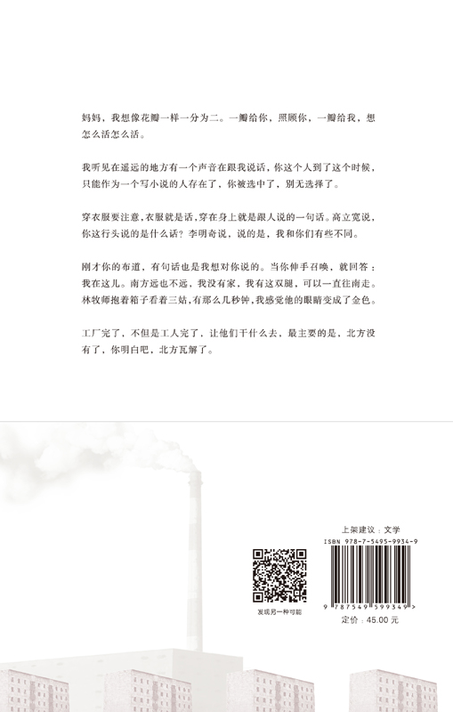

一
走廊的尽头是两扇门。是两扇门。他们摘掉我眼睛上的黑布之后，我看见了那两扇门。紧紧关着，结婚照上的夫妻一样靠在一起。我在心里打了个比方。
“你在这里等一下。”引我前去的西装人指着门口的沙发说。
“好，需要多久？”
“不知道。”他把自己的领带向上推了推说，“等着就好。”
“那就等着吧。告示上说的一大笔钱，具体是多少，可知道？”
“不知道，我这个级别的人不会知道。”
“我想去北极看北极熊。”
“北极熊？你说的是这个？”
“是北极熊，北极的特产。”
“知道了。”他侧过头扯了扯西装的垫肩，好像不准备再说话了。
走廊好像宇宙飞船的航道一样长，不知道这两扇门是终点还是起点，另一头又通向哪里。我坐在沙发上昏昏欲睡，其实并没有办法睡着。离开家已经五年，走了二十几座城市，去过的村庄数不过来，想不起来是从哪一条线索开始的，又是什么东西把这么多的地方一个接一个地衔接起来，总之是一无所获，除了花光了卖房子的房款，和十年来所有的积蓄。不知道怎么回事，只是还记得那个傍晚。那是在云南的一个小旅馆里，应该是第四个年头了吧，吃过晚饭，坐在床上看电视，忽然放出了日本动画片《阿拉蕾》，我看了一会，听见自己脑中的什么“刺啦”一声冒出一股青烟，伸手在脸上摸，发现眼泪已经流过了下巴，鼻涕也出来了，而自己完全不知道。拿起电话打给妻子，一连打了三十几个，没有人接听，我跑出门，看到街上有一个过街天桥，于是跑上去从上面跳了下来，没有死成，骨折了几个地方，鼻子也摔塌了。从医院出来之后，我把号码办理了停机，再也没有和妻子联系过，自己一个人在中国闲逛，总是睡不着，有时候也打一点零工，只是我这个年纪，能胜任的零工很少，卖过房子，也在搬家公司搬过家具。直到剩下最后一点钱，我发现自己已经回到了家的附近了。
于是，我非常想去北极看熊。
“醒一醒，可以进去了。”西装人推了推我的肩膀。
“没有睡着，闭目养神而已。”
“无论怎样，请进去吧。”他一手拉开了一扇门，另一只手拉了拉西装的下摆。
房间很大，好像是刚刚租用的办公室，旧东西刚刚搬走，新东西还没有进来，地上还有曾经摆放的隔断留下的灰尘。左侧的白墙上挂着一幅画，尺寸不大，四四方方，上面画着一个金色的佛像，佛的眼睛闭着，嘴巴抿成一条直线，头上是山峦一样的卷发。另一个西装人提着公文包站在房间中央，细高的个子，戴着无框眼镜，深黑色的西装上衣系着最上面的一个扣子。手上戴着一双白手套。若不是看见我之后向我走来，还以为是谁摆在那里的指路模型。
“千兵卫先生是吧？”他停在我面前两步远的地方。
“电话里留的是这个名字，不是真名。”
“没关系，这个名字就好。我是老伯的律师，让你久等了，应征的人实在太多，请不要见怪。”
“不会，正好累了，在外面睡了一会。沙发倒是很舒服，人一坐进去就想睡觉。”
“失礼失礼，弄这样一个这么容易让人睡着的沙发实在是过意不去，没有着凉吧，回头我让人换一个让人清醒一点的放上。”
这个人怎么回事，客气得实在过头，啰里啰唆。一面大谈门外的沙发，一面不肯在房间里放两把椅子，嘴上的客气又有什么用呢。内心的焦躁情绪向上涌动一下。为了防止做出过分的举动，我努力不去看他的嘴，转而盯着他的脖子看。每当我觉得要无法控制自己的时候，我就去看别人的脖子，无论是多么难看的脖子，都有柔和的曲线可以让人略微放松一会。
“现在可以开始了吗？”他的喉结终于动了。
“可以了。”
“请问您现在从事的是什么职业？不方便可以不说，有时候职业是一个人的隐私，其实在下知道这么唐突地问对方的职业十分失礼，只是既然是受人委托寻找合适的人选，只好硬着头皮问这么一下，您能理解吧？”
“曾经是银行职员，现在什么也不做。”
“失敬失敬，原来曾是金融家，社会能够运转全靠金融家调配各渠道的资金，说是某种程度上的枢纽也不为过。没有金融家，钱就成了死钱，世界也就回到了古代。请问是前台金融家还是后台金融家呢，可否方便告知？”
“前台金融家是？”
“不好意思，是在下描述得不够清楚，模糊得厉害。前台金融家换一种说法，也许稍微有些粗鄙和不敬，不过一时找不到更好的说法代替，只能姑且这么一说，没有丝毫冒犯之意。前台金融家就是柜员。”
“那我确实曾是货真价实的前台金融家。有点事情能不能先讲一下？”
“当然当然，是在下考虑不周，没能想到您一直有话要说，其实从您的眼神应该能够看得出来，只是一天之中面试了几十个人，神经有点麻痹，才出现了这样的疏漏。请讲吧。”
“我曾经出过一点问题，具体说是神经上面的一些事情，所以偶尔的暴力倾向在所难免，想来您这样的人应该能够理解。”
“十分理解，精神问题是现代社会……”
“所以为了您的安全，请您说话尽量切中要点，有一说一，如果再这么绕圈子，我一时控制不住，跳过去掐死阁下也说不定，我的意思您明白了吧？”我盯着他的脖子说。
“那就太好了。非常明白。”律师彬彬有礼地点了点头，声音里没有丝毫别的什么东西。
“下一个问题，你可知道我们招聘的是什么人？”
“告示上写的是特殊情况处理师，如果我没记错的话。”
“确实如此，为什么来应征，或者换句话说，为什么认为自己能够胜任？”
“我很需要钱。”我诚实地说。
“似乎这不算什么胜任的标志。”
“想用这笔钱去北极看北极熊。非去不可。”
“很好。看完了熊呢？”
“还不知道，先看熊再说。”
“所以你目前只是为了去北极看北极熊，而愿意来应征这个工作，特殊情况处理师的工作。”
“可以这么说，表面上看确实如此，事实上到底是怎么回事，我也没有搞清楚，所以这么说没什么问题。”
律师把公文包放在地上，看起来很沉的东西，扎实地立住，没有向侧面倾覆。他走到我面前说。
“请把手伸出来。”
他拿住我的手，看过了手掌又看手背，然后捏了捏我的手腕，好像法医在检查尸体。
“曾经受过伤？”
“大学打篮球的时候，曾经弄折过一次。很久之前的事情了，你不说我都要忘记了。”
“可当过兵或者混过黑道？警察局的事务也算。”
“没有，毕业之后就做了银行职员，只不过中途换过一次银行，行业一直是这个。”
“可曾与人起过纠纷，动手那种，被打或者打了别人？”
“偶尔会有，近几年的事。”
“此事可能与你的精神问题有些关联，不过在此不用多谈，像你说的，啰唆无益，我又不是给人催眠的心理医生。最后一个问题，如果让你去杀一个人，你会怎么行动？如果不愿意回答，今天我们就可以到此为止了。”
“也许到时候就会想到。”
“什么意思？”
“就是去杀的时候，也许才会有灵感，毕竟杀一个人不是什么清空别人存款账户那么简单的事情，无论怎么谋划，到了真正动手的时候，可能最重要的是随机应变。”
“有道理，虽说你是个普通的银行职员，可是说起杀人来好像有点心得似的。”
“银行职员这种东西需要后天训练，杀人恐怕不用，只要是人大体上都具备这种能力吧。最近可看了新闻？”
“抱歉，确实看了，不知道说的是哪一条。”
“几个游人跑到动物园去看鳄鱼，鳄鱼正在冬眠，几人觉得无趣，就丢石块把鳄鱼砸死了。在旅馆的电视里看到的。”
“这条确实没有看到，鳄鱼就这么死了？”
“嗯，就这么死了，睡着觉被别人用石块砸中要害死了。”
“知道了。我想打个电话，不打扰吧。会不会因为我打个电话就犯了精神病？”
“你可认识我老婆？”
“在下是个同性恋者，认识的女人不多，除非同在法律界谋生，或许可能有所耳闻。”
“不是法律界人士。请便吧。”
“虽然是同性恋者，刚才碰您的手可是没有别的意思，我这人从来不把工作和生活混为一谈，对患精神问题的银行职员也是一点兴趣也没有。”
“知道。”我无所谓地说。
在律师走到房间的最远处打电话的时候，我开始觉得此事有些意思了。难道是让我去杀人不成，这个特殊状况处理师其实是个杀手？如果果真是如此，可一定要问清楚才好，不是什么人都可以跑去杀掉的，哪怕是会得到一大笔钱，哪怕是可以就此去北极看熊，也一定要问清楚才好。
“让您久等了。情况比我预想的顺利，看起来我们下面可以进入实质的阶段，不知道阁下可准备好了，因为之后谈论的事情有些敏感的东西在其中，虽然对于我们来说没什么大不了，不过不知道对于您来说是不是觉得别扭。而一旦进入了实质阶段，即使最后没能够合作，这方面的事情也需要保密，阁下一旦泄露或者有泄露的趋势，恐怕会有对阁下不利的事情发生。所以，阁下准备好了吗？”
“你们说的一大笔钱到底是多大一笔？”
“很大的一笔，去北极看熊绰绰有余，这么跟您说吧，即使每次去只看到一只，这笔钱也够您把所有北极熊都看个遍的。”
若是在从前，恐怕一定会给妻子去个电话，妻子是善于决断那种人，无论面对何种状况，用不了三五秒时间，就把手掌当胸一拍说：就这么办吧，这么办一定不会有错。而事实证明，绝大多数情况妻子都是正确的，或许不是正确那么简单，而是一旦她做出选择之后，就与自己所做的选择融为一体，患难与共，即使有时和预期略微有些小出入，她也会冷静地告知我：所有事后认为并不是完全明智的选择，在事前都是必须的，这个道理你懂吧。妻子就是这样的人，小到一卷卫生纸的牌子，大到是不是忤逆父母与我结婚，都会用两只灵巧的手掌在胸前一拍，然后绝不后悔，那一拍与其说是对自己的鼓舞，不如说是与其他可能性的告别，一别之后，再无瓜葛。
“既然如此的话，那就请讲吧。”我在心里从一数到十，然后努力抓住第一个浮现在脑海中的念头，那个念头是：面对一条没有桥的大河，只能游过去，如果想绕行的话，也许在找到河的尽头之前，我就会气馁了。
“爽快。还是老伯的眼光厉害，在下虽然站在阁下面前，也没看出阁下是这样的一个人。我们想请阁下帮我们杀一个人。”
“哦？”
“阁下可看小说？”
“看。实话说，精神好的年头里，很喜欢看。通俗小说。”
“那就好办了。想请阁下去杀一个小说家。”
“小说家？”
“确实是小说家。一个以写小说为生的人，虽然生活得不怎么顺利，毫无名气，一篇小说也没有发表过，和所谓的文学圈子几乎没有联系，可是写小说的能力相当好，而且不论困顿与否，一心想把小说写下去，所以我们称之为小说家。”
“恕我直言，这样的人一定是相当稀有的吧，饿着肚子写小说的人，为什么要去杀他呢？”
“他对老伯做了不可饶恕的事情。”
“不可饶恕的事情？能不能说得更清楚一点？”
“当然当然，你不问我也会解释给你听，我们已经是一个战线的人，不会让你有只为了钱而去杀人的愧疚感。这个小说家到目前为止，短篇小说写了九篇，塞林格你可知道？”
“完全没有听说过。他和此事有什么关系？”
“一点关系也没有，只是随口一说，塞林格是个死去的美国作家，据说晚年喜欢喝自己的尿液，不好意思又扯远了，看你的样子情绪已经平稳，不会再跳过来掐死我了，所以仗着胆子闲扯了一句。塞林格写过一部书叫《九故事》，九个短篇小说，小说家的那九篇小说和这部书有点像，应该是受了塞老兄的影响，说是影响有点不太准确，应该是在与他较量，多奇怪的一个人，喜欢和死去的喝尿的美国作家一较高下。小说家的这九个故事，有八个和我们毫无干系，只是八个很精美的小说而已，无论是被埋没还是突然有一天因为这八篇小说得了诺贝尔奖都和我们毫无干系，只是另外一篇，名字叫做《心脏》的，和我们有了关联，或者说，对我们造成了困扰。”
“《心脏》？”
“是叫这个名字，九篇小说的名字大体如此，也有叫《静脉》《阑尾》的其他几篇，有问题的这一篇叫做《心脏》。”
“这个《心脏》问题何在？”
“你可听过盅蛊之术？”
“没听过，也不知道盅蛊两个字怎么写。”
“很像的两个字。你有没有一直记恨的人。”
我想了想，说起心结的来由，似乎有几个人需要记恨，可是仔细推敲，又不知道具体是谁，或者说，如果知道是谁，也不会落到现在这个地步。
“没有。没有记恨的人。”
“那说起来就要费一些功夫。盅蛊之术便是如果你有记恨的人，照着他的样子扎一个小人儿，用银针刺入小人之中，你所记恨的人也会跟着受苦，如果法力很强，疼痛的位置都会大体一致。”
“有这样的事？”
“传说而已。现代社会，若是有记恨的人，非要去寻仇不可，用这样的方法岂不是会让人笑死，有扎小人买银针的功夫，还不如去雇个打手或者请个律师，实际得多。盅蛊之术在我看来，只是无能之人的浪漫幻想。”
“很实际的想法。”
“确实如此，在下是律师嘛，浪漫主义律师不会有好下场的。但是大千世界无奇不有，虽然在我看来无论多么玄虚的事情，内在一定有现实主义的规律在推动，只是我们没有找到那个规律才觉得玄虚。老伯最近碰到的所谓玄虚的事情，就是因为这篇《心脏》，简单来说，小说家在这篇小说里写了一个人物叫做赤发鬼，不是水浒传里的刘唐，是他创造的一个新的人物，而小说中发生在赤发鬼身上的事情都会发生在老伯身上，说来奇怪，每一件事都会应验，这让老伯很困扰。”
“具体都是些什么事呢？”
“这里不方便说，涉及被代理人的隐私，但是事情是实实在在发生了，当然我还是相信一定有什么东西可以解释它，可是按照老伯的意思，与其说去寻找此事运作的机制，还不如把源头消灭掉。而且最棘手的是，根据我们的情报，按照小说家一贯的进度，再有三天，小说就会结尾了，虽然在写完之前结局到底如何，谁也不知道，但是从目前的趋势看，老伯一定不会有什么好下场。这就超出了一个体面人能够忍耐的极限，老伯才下定决心，不能让这个人和这篇小说在这个世上存在。”
“说句外行话，因为雇凶杀人什么的毕竟是你的专业。就不能找到小说家谈一谈？或者给他一笔钱，或者吓唬他一下，看起来你们做这样的事情应该轻而易举。世界上可写的东西那么多，不用非得写让人头疼的赤发鬼嘛。”
“当然也考虑到这个方案。实话说，他之所以一篇东西都不能发表，其中也有老伯暗中关照的原因。寄到各个地方的稿子，因为老伯事先打过了招呼，全都给原封不动地退回了，而且大多写了负责任的退稿信，提醒他确实是个难得的写小说的人才，只是题材不对，很难出头，换个方向，也许会震惊文坛。可是这个家伙看过了退稿信，就把信往厕所的纸篓里一扔，继续写他的小说，一定是头脑中某个地方出了大问题的人才会这么干。所以老伯也就清楚，吓唬他也不会有用，搞不好还会引出更大的困扰，还是想办法把他清除掉比较可靠。而且就算我们出面让他暂时地低头了，留这样一个可怕的人在世上多少会让人不放心。达摩克利斯之剑，你明白吧。”
“大致明白。”
“现在看来，两个人总有一个要完蛋，不知道你对生命的价值怎么看，在我心里无论是地位多悬殊的两个人，生命的价值都是一样的，既然一样，既然一定有一个要消失，我们希望你帮助我们让小说家消失掉。天平两端的东西一模一样，陌生人的生命，只不过其中一个上面又放了一笔钱上去，现在是这样的情况。”
看起来确实是这样的局面，律师说得没错，虽然已经想到这次来应征的工作不会是什么见得了光的事情，可万万没有想到是去刺杀一个小说家。小说家那种东西过去只是听说过，古往今来有过不少，能让我叫出名字的没有几个，一群十分遥远的存在。去杀一个不得志的小说家，按道理说不是什么困难的事情，心里面已经有了几套方案，神不知鬼不觉地把他干掉，然后全身而退，拿着钱搭上去挪威的飞机，远离在这里受到的折磨。可是问题在于，无论是小说家与否，那是一个不得志的人啊。
“犹豫是很正常的事情，看起来是个弱者，但是不要忘记他具有置人于死地的力量。还有就是，你呢，目前已经上了这艘船，若是现在想弃船而去，恐怕会淹死。”
“哦？”
“是会淹死。也许你是个游泳健将，但是还是会淹死。和会不会游泳没有关系。”
“如果我杀了小说家，怎么知道一定能拿到那笔钱呢？即使能拿到，怎么知道一定有命去花呢？既然已经到了这个地步，全都说开好了。”
“说开最好，杀人这种事一旦心存疑惑，失手的几率就会大大增加。钱现在就会给你，不是预付款，是全部的酬金。我们也没有把你灭口的计划，因为灭口这种事情一旦做起来，就会漫无止境，非得一直灭下去不可，所以老伯的意思是到你为止，你可以带着这个秘密活下去。但是如果你没有完成任务就带着钱逃跑了，恐怕无论逃到哪里都要想办法把你找到，此中涉及事情的性质问题，一旦你改变了此事的性质，我就无法保证你的安全了。”
“所以你刚才说到淹死的事……”
“门外有很多的水，也许你来的时候没有注意，也许出门就会不小心淹死的，有这种可能。”
“过河的小卒？”
律师把两手一拍，说：
“比喻得好。一点不像精神上有问题的人。”
他回头拿起公文包，递在我的手上。
“这里面有小说家的所有资料和你的酬金。刚才忘了说，这个人和母亲住在一起，快要六十岁的母亲，说是啃老族也不为过，想来不会给你造成什么麻烦，即使有点麻烦，相信你也会处理好。今天之后，我们不会再联系你，你也没有办法找到我们，让你孤军奋战其实很过意不去，不过相信你也能理解这是没办法的事情，也只有这样，你才配得上这笔酬金。你知道可爱的北极熊可在等着你呢。拜托了，千兵卫先生，无论从哪个层面来说，千万不要失手啊。”
说完他松开了戴着手套的手，冲着我鞠了一躬。
二
久藏在小河边散开自己的发髻，然后大头冲下把脑袋贯入河水之中，长发在潺潺流逝的河水中漂浮，如同深黑色的水草。他努力屏住呼吸，冷冽的河水刺痛了他的脸颊，几只未长成的鳟鱼游至他的面庞，小心地啄咬着几十天来因为赶路而死去的脸皮。几只跳蚤从头发里面逃出去，没有游多远就淹死了。初春刚刚来到，乍暖还寒，不是因为肺活量的原因，而是因为再这么憋下去，血脉上涌，寒气下行，容易在水中伤了眼睛。十九岁的久藏把脑袋从水中拿出来，长出一口气，用双手拧干自己的长发，不是每个人都拥有他这样坚韧漆黑的长发，邻居二狗的头发就长不长，从他十二岁开始就一心想买久藏的头发，给自己做一副假发，甚至想用一只祖传的玉镯交换，久藏没有答应。虽说头发剪掉还能再长出来，可是还是不同的头发，况且妈妈小时候告诉过他，男人断发不是什么好兆头，二狗是个地道的农夫，当然不知道这些，妈妈虽也是种地的，可知道的事情比同村的人都多，所以他的头发一直稳妥地长在脑袋上，准确地说，根部长在脑袋上，发梢可到腰间。
几只返乡的候鸟落进不远处的草丛，以他的经验，倦飞许久的大雁虽说肉质发酸，入口极难下咽，优点却是很容易捕获，只要掏出腰上的弹弓，几个石子就是几只大雁。问题是虽然盘缠已经用尽，包袱里还有妈妈带的两个烧饼，没到需要打鸟为食的地步，况且他从小就很喜欢鸟，吃掉能够高飞的东西在他心里是多少有些问题的事情。弹弓还是临行前，三炮连夜做出来送给他的，偷了一截他奶奶留着做寿材的木头，配上上好的牛筋，木头上还涂了一层羊油，防止带在身上久了受潮。被三炮知道因为饥饿用他做的弹弓打鸟，他一定会生他的气，弄不好再也不会理他了，三炮这人就是这样的脾气。
离京城应该是很近了，在暮色里远远地已经望到了护城河。久藏的计划十分缜密，天黑之前入城，打听赤发鬼的住处，到他的家里把他杀死，割下首级放在包袱里（因为只有一个包袱，所以到时候恐怕要把烧饼挪到身上，沾了血的烧饼又腥又潮，肯定没法吃的），然后回家把赤发鬼的首级拿到妈妈的坟前给妈妈看。
久藏是家里唯一的孩子，可是目前尚未娶亲。在他九岁的时候，妈妈和村口的肇氏有了些龃龉，肇氏觉得妈妈这个外来人好像处处和她为敌。肇氏的爸爸是个郎中，也配些鼠药来卖，时间久了郎中的事情倒经常被忘记，得了一诨名叫做耗子肇。肇氏拿了其爹耗子肇的鼠药投进了久藏家门口的水井里，然后连夜逃走，据说逃入了长白山。喝了井水的村人有八九个，大多安然无恙，没觉出什么厉害，只有九岁的久藏喝了井水后发起高烧，五天五夜昏睡不醒，第六天终于醒转，吵着要吃烧饼，才知道这孩子活了。只是从此言谈举止经常出人意表，耕田也耕不直了，经常一耕下去就没有回头路，一直耕到对面的山上，妈妈只好让他跟着村里的铁匠学铁器手艺，他便在火炉边拉了十年风箱。十年过去还是一把爬犁也打不出，所以久藏到了十九岁的头上还未娶亲。
要说这十九岁第一次出门远行的缘由，是因为妈妈死了。久藏做不了农活，妈妈不但要下地耕田，还要养鸡养鸭，还要清早起来把绳子套在身上推磨。买不起大牲口，妈妈就把自己当成大牲口来用。磨盘用得久了，也许已经用了上百年也说不定，中间的木轴糟了，槽纹也浅了，有时候豆子放在上面，妈妈推着磨了许久，豆子还是豆子。正想找石匠来抠，石匠还没来，磨盘从磨台上掉了下来，砸中了妈妈的右脚，把脚给砸烂了，脚趾头一个不剩，剩下一个铲子一样的脚掌肿得老高。妈妈没有歇工，正是秋天，地里的庄稼不收就算不被别人收走，也会烂在地里，况且妈妈还给老郭聋子打了一份长工，如果歇了工，东家就会请别人。老聋子因为耳朵不好使所以心眼小，老觉得别人在背后嚼他的舌头，妈妈突然在秋收的时候撂挑子，老聋子一定会多想，明年也不会请她了。所以妈妈没有歇工，掏了些灶坑里的灰涂在脚上，垫了些棉花，用厚布包住，还是像往常一样，天没亮就下地了。秋天虽不比春夏，可地里还有虫子，据耗子肇讲，要了妈妈命的不是伤口不通风，血气滞涩，脚成了死物，渐渐累了腿，又累了全身；也不是石灰不净，进了血脉，周身留着带石灰的血，流着流着流不动了，堵在了身子里。而是翻着的伤口被不知是什么虫子，也许是钱串子，也许是屎壳郎，给咬了一口，得了丹毒。所以表面上是丹毒要了妈妈的命，而实际上，是那个不知道用了多久的磨盘把妈妈弄死了。
妈妈临死之前，把久藏叫到床边，说：不要嫌妈臭，妈有话跟你说。久藏拉着妈妈的手说：妈。妈妈从枕头底下拿出一双草鞋，说：这两天不能下地，给你打了双鞋，穿上试试。久藏穿在脚上，正合适，草鞋被妈妈枕得挺暖。妈妈说：有个事一直没跟你说，今天说给你，一定得给妈记住，能记住吗？久藏说：能。妈妈说：知道你为什么没有爸吗？久藏说：不知道，我不是你生的吗？妈妈说：是我和你爸一起生的你。你爸叫做久天，是京城的一个侠客，擅使单刀，他有一个好朋友叫做赤发鬼，和你爸一样，曾经都是屠夫。久藏说：我爸是杀猪的？妈妈说：原来是屠夫，后来成了侠客。你爸成了侠客之后，赤发鬼还是屠夫，又过几年，你爸名满京城的时候，赤发鬼也已经是京城里最大的屠夫，掌管京城所有的猪肉。于是他就不当屠夫了，捐了个官。久藏说：捐了个官？妈妈说：他成了宰相。久藏说：宰相？听着还像杀猪的。妈妈说：因为一直是好朋友，赤发鬼当了宰相之后，你爸就成了教头。又过了几年，你爸发现皇帝因为抽大烟，很少起床，所以京城实际上是赤发鬼在掌理，而赤发鬼想把京城卖了。久藏说：把京城卖了？妈妈说：不是整个地卖掉，而是切成十三块，大小不同，卖给不同的人。久藏，把灯灭了吧，说话不用点灯。
久藏吹灭了油灯，妈妈马上变成了黑黢黢一团，散发着特殊的气味，那气味很重，重得好像能听到声音。灯灭了之后，久藏发现自己好像已经受不了了，就爬上了炕推开了窗子，借着月光，他看见院子里落进了一只秃鹰。
“妈刚才说到哪了？”
“刚才你说到把豆腐切成十三块，卖给村子里不同的人…….”
“不是豆腐，是京城。你爸叫久天，是京城的教头。虽然和赤发鬼是好朋友，教头的差事也是赤发鬼给他做的，但是你爸不同意把京城切开卖掉，他说赤发鬼是卖城贼，卖了京城之后就会天下大乱，于是就造了赤发鬼的反。他们差一点就成功了，可是老百姓都觉得赤发鬼是对的，京城早就应该变一变了，赤发鬼才是真正的好汉，所以你爸他们没有成功。赤发鬼割下了你爸的脑袋连同他的单刀一起，挂在城头示众，你爸的一个老部下偷了来送给了我，让我带着你连夜出城，不要再回来，那年你一岁多一点。人头太沉，带不下，让我扔在了房后的井里，只把刀带了出来。那人后来被赤发鬼凌迟处死了。”
“妈，院子又多了一只大鸟。”
“你爸叫什么啊，我的儿？”
“久——”
“久天。”
“我爸叫做久天，是个屠夫。”
“是侠客。本来这些事情不想告诉你，也不想让你去找赤发鬼报仇，但是人要死了，想法会变，想多少干点什么，毕竟久天是我的夫君，在他活着的时候对我很好，这么多年我也一直想着他，要不是因为你，当初会跟他死在一块的，现在连个人头也没留下。炕柜里有一个包袱，里面放着十个烧饼和一些首饰，是我当姑娘时的嫁妆，还有你爸的刀。其实你应该是个武人才对。”
“我也是个侠客？”
“你应该是个侠客，因为赤发鬼，你才变成了农夫。你妈妈不是被磨盘弄死的，从根上说，也是赤发鬼的原因。”
“里面有十个烧饼吗，妈？”
“有。如果你到京城找到了他，你和他说什么啊？”妈妈的声音里掺进了更多吸气的声音。
“我妈的脚让磨盘砸坏了，耗子肇来看过……”
“你要说，我是久天的儿子久藏，今天来取你的项上人头，明年的今天就是你的忌日。”
“明年的今天就是你的忌日。”
“是这么说，我的儿，把窗子关上吧，妈妈冷。”久藏关上窗户之后，气味消失了，他回过头来，发现妈妈的一只手从被子里支了出来，已经咽气了。他把妈妈的手放回去，一只秃鹰飞过来扑在窗户上，“哗啦”一声，窗户颤动起来，他没有害怕，我是久天的儿子久藏，今天来取你的项上人头，明年的今天就是你的忌日，他在心里说了一遍。然后拉开柜门，打开那个包裹，里面果然有一把刀，一把扇面一样的杀猪刀。把刀拿在手里掂量了掂量，分量正好，刃也完好无损，新的一样。打开窗户，放秃鹰进来，秃鹰刚刚落在妈妈的胸口，他抬手一刀，把秃鹰的脑袋砍了下来。
三
律师给的地址十分详细，小说家的作息时间和活动区域也十分详细，写在另外一张纸上。钱果然是好大一笔，用牛皮纸捆着，是美元，上面画着富兰克林的半身像。我找到一家能够处理外汇业务的银行，开了张新卡，把钱存进去，密码是妻子的生日，和过去一样，因为钱数太多，只有这个密码比较稳妥。办完事，在旁边的面馆吃了碗拉面，吃得满头大汗，看看手表，下午四点二十分，离小说家去大学足球场散步还有十分钟。律师约谈的地点离小说家的家相当近，我甚至怀疑，透过那个空荡荡的办公室的窗户，可以看见小说家的书房。四点二十六分，我坐上了球场的看台，一群大学生穿着五颜六色的运动服在土球场上踢着足球，我聚精会神地看着他们：努力地想把球踢进两个石头摆的简易门里，可是怎么也踢不进去。我忽然明白，现在的情况是，不是小说家和老伯只能留下一个的问题，而是我和小说家两个人，只能留下一个。
四点三十分整，小说家从侧门走进了足球场。虽然是七月，正是这里全年最热的时候，他却穿了一件红蓝格子的长袖衬衫，一条深蓝色的牛仔裤，脚上穿着不知是什么牌子的黑色运动鞋，其鞋之丑，与身上颜色之不协调，好像是偷的别人的鞋。看起来不像是三十岁的人，更年轻一点，戴着黑框眼镜，低着头用那双奇丑无比的笨重运动鞋慢慢走着。目测来看，和资料上写的基本一致，体重不足六十五公斤，缺乏运动，上肢尤其瘦弱，胳膊几乎和女人一般细，近视眼不是十分严重，可是因为有一定程度的弱视，如果摘下眼镜，面前马上一片混沌。如果说一定要杀一个人的话，这样的人恐怕是相当可心的目标。
他绕着球场缓慢地走着，眼睛看着脚尖，好像在想着自己的事情。一只足球从他眼前飞过，撞在看台地上的墙上，弹到他脚边，他用双手把皮球捡起来，用力丢回场地里面。
“小说家来了？”一个学生用脚接住皮球，问道。
“来了。今天进了几个？”
“两个，左右开弓。”
“了不起，不过还是小心一点为好，新换的眼镜。”
“没说的。上次说的那篇小说，写得怎么样了？上次那一篇。”
“正在写，每天都写。”
学生把球传给别人，从边路跑上去了。
球场杀不了人。人太多。况且大学生这种人，很难对付，我也念过大学，那时的自己和现在比起来，不讲道理。书店也是，不好下手。人多不说，恐怕还有摄像头这样的东西存在。我想了想，从看台上走了下来，走上球场外围的跑道，跟在小说家身后慢慢走。大约是十步左右的距离。
走了两圈，我挨近了一点，继续走着。可能是听见了身后的脚步声，小说家回过头看了我一眼，我冲他笑了笑，他也点了一下头，然后继续向前走。又走了大概五圈左右，他站住了，转过身说
“今天不走了，回家吃饭。你慢慢走，这里很适合走路。”
“是。”我说，“第一次来这里走路，想再多走一会。”
他又一次点点头，说：
“小心学生的球，这些孩子踢不进门，专门喜欢踢人脑袋。”
我说：
“好的，注意脑袋。”
“是这么回事。”说完他低着头从侧门走出去了。
第二天小说家还没来的时候，我已经自己走了两圈。这次他走在了我的后面，我走了一会停了下来说：
“你走里圈，我走外圈，还能聊聊。介意聊聊吗？还是想自己一个人走？”
“都不是问题。”他和昨天一样的装束。
并排走了好长一阵，俩人都没有话，只是闷头走着，身上渐渐出了汗。学生的足球飞到脚边一次，我捡起来扔回场地。回到外圈的时候，小说家说：
“住在附近？”
“是，你呢？”
“就在球场旁边，一直住在这里。”
“小说家？昨天听学生这么叫你。”
“不算，就是一个写小说的人，谈不上小说家。你呢？”
“没有工作。说来话长，目前的情况是这里好像出点小问题，正在想办法。”我用手指指了指自己的太阳穴。
小说家抬起头看了我一眼，估计很容易地就看到了我深黑色的眼袋，除了在律师门前的沙发上，我已经很久没有睡觉了。
“不好意思。”他不好意思地说。
“没关系。你呢，有没有像我这样的经历，从一个正常人突然变成了一个自己都不认识的人，好像月亮突然失去地球的感觉。”
“月亮突然失去地球的感觉？”
“是啊，就是这种感觉。”
“很不错的比喻。”
“以前很少打比方，说什么就是说什么，开始打比方是出事之后的事情，因为有许多事情突然间说不清了。”
“很有意思。”小说家的脚步慢了下来，头也基本上抬到了原来的位置，可能是以便用余光看我
“虽然经常有心情不好的时候，可能还没到可称得上症状的程度，可能是从二十五岁开始一直写小说的原因，别的事情很少去想。什么感觉？”
“了无生趣。”
“不想活了？”
“还没到非得把自己除掉的程度，只是不想活的念头会经常浮现，而且现在的我，想去北极看北极熊。”
“真的？”
“是啊，也知道这样的念头相当不正常，可是好像非得这么做不可，一定要去北极看熊，目前来看，只剩这么一个念头，正确与否已经管不了了。”
“介不介意，我问一下，为什么会变成现在这样，因为你看起来不应该这样。”
“介意。恐怕。”我说。
天色已经渐渐暗了下来，周遭的东西开始模糊不清，生锈的球门，破烂的球网，踢球的学生们不知道什么时候散去了，只剩下空荡荡的操场，裸露着昏黄的灰尘。远处的大学食堂的烟囱冒着烟，一群乌鸦从烟囱旁边飞过，“嘎嘎”地叫着。更远处的办公大楼的牌子也亮了起来，看不清是什么字，只看得见一片亮光。
“你是不是要回家吃饭了，已经过了昨天的时间了。”
“我倒没什么问题。”他抬手看了看表。“如果你还想聊聊的话，我们可以去看台上坐坐。再这么走下去，我怕明天起不来，已经走了平时两倍的路了。当然，如果你不介意的话。”
面对着球场在看台上坐下来，我忽然想到如果现在把小说家杀死，可能是一个很好的机会，四野无人，即使呼救也不会有人听得见。尸体可以就藏在看台底下的废旧的储藏库里。第一次来的时候，我就注意到了那个储藏库，锁已经锈了，估计里面摆着一些废弃的体育器材，只要把锁打开，把尸体放进去，塞进残破不全的体育器材里面，很可能一个月也不会有人发现。那时候我可能已经到了北极圈了。
“你现在住在哪里？”他问。
“住在附近的一个黑旅馆。”
“离家出走？像威克菲尔德先生一样？”
“威克菲尔德？”
“没事，无关紧要，你看，那群乌鸦又飞回来了。”
果然，刚刚飞过烟囱的乌鸦又折回来，从相反的方向飞过烟囱，盘旋了半天之后，飞过一片楼宇，不见了。
“一直写小说？”我知道，再过十五分钟，天就彻底黑下来了。虽然今天没准备动手，可是就像我和律师说的，这样的事需要随机应变。没带任何工具，恐怕到时候只有把他掐死了。
“从二十五岁起，到现在写了五年。这五年确实是一直在写。”
“写些什么呢？”
他笑了笑说
“没人看的东西。”
“写了五年？”
“嗯，就这么写了五年。每天睡九个小时，早上九点起床，吃早饭，写到中午，午饭之后看书，累了就把书放在胸前睡一会，醒了再写三个小时，晚饭过后抄小说，抄完就睡觉。”
“抄小说？”
“是，把自己喜欢的小说抄在本子上，也写意见，用其他颜色的笔。”
“哦。”
“无聊吧。到现在为止，一篇小说也没有发表过，不是不想发表，写完就烧掉那种，是真的寄出去，然后给人退了回来。渐渐也就放弃了，只剩下写小说一件事。”他看着冒着烟的烟囱。“你看那个烟囱，如果有一天不冒烟了，或者无烟可冒了，他会不会还在那里？”
“不知道啊。”我在感受着黑暗的缓慢爬升，好像溺水的人看着水面渐渐没过了头顶。手心也开始出汗了。
“我也不知道，但是可能他还会在那里，一时半会不会有人来拆他。从某种程度上说，我就是一个不冒烟的烟囱，站在那里，暂时还没有被拆毁。知道这样的形容很无聊，其实空洞无物，可是很久没有和人聊聊，一旦聊了起来，也就不在乎空洞不空洞的问题了。”他摘下眼镜，用衬衫的下摆擦了擦，又戴上。“大学的时候曾经交过一个女朋友，毕业之后因为我没有试图去找工作，而是决定在家里写小说，所以很自然地不再来往，估计她的父母也松了一口气吧，我确实不是一个适合结婚的对象。这五年的收入加起来，应该是零，一点也没有，如果有人给我本人做一份财务报告的话，利润那栏上应该是负数，靠着妈妈的养老金生活，蛀虫一样蚕食妈妈微薄的收入。总体上，我厌弃写小说的生活，你知道我的意思吗？十分厌弃这样的生活，可是为了写小说，只能过这样的生活。我不是隐士，念大学的时候也是个很活跃的人，喜欢喝酒唱歌，老师们也都很喜欢我，有事经常找我商量，让我把同学组织起来做些什么，远足啊，参观啊，同乡会啊，每次都不会让大家失望。可是突然有一天，陪女朋友去图书馆，我看到一篇小说，名字叫做《我打电话的地方》，实在是好看极了，边看边流出眼泪。之前很少看书，生活里杂七杂八的事情很多，没有想起来还要看书。从那天之后，每天去图书馆看小说，课也不上，女朋友想找我，只有去图书馆，每天一直看到图书馆熄灯才走，回到寝室睡也睡不着，想着小说里的事情。沿着学校图书馆的书架，中国文学，法国文学，英国文学，美国文学，日本文学一本一本看下去，笔记记了十几本，也在上面画图，很多大部头的小说，自己画人物图出来，如果你现在要我画《战争与和平》的人物图，我还是可以马上画出来。有些稍短一点的篇章，因为看了很多遍，可以背诵。女朋友说我着了魔了，成绩一落千丈，朋友也不怎么来往，我自己知道，远比着魔严重，人生可能要就此反转了，本来是顺着阶梯向上爬来着，突然掉进了一口井里，不是不能出来，而是再也不想出来了，或者说，甘愿过井下的生活，其他事情都了无意义。我要做这件事，我的一生只能做这件事，我清楚地知道这个事实，也许你不相信，我听见在遥远的地方有一个声音在跟我说话，你这个人到了这个时候，只能作为一个写小说的人存在了，你被选中了，别无选择了。我真的听见了这个声音，所以无论付出什么代价，也只好这么做。”
他站了起来，说：
“向上走走，给你看点东西。”
我跟着他一直走到看台的最后一排，距离地面大概有五层楼那么高了。看台的最后面是一面石垛，并不高，到我的脖子左右，石垛另一面一直垂直到地面，底下是一条小路，两边种着桃树，粉红色的桃花开着，一些花瓣凋谢在黑色的地上，还没有被扫走。小说家把胳膊搭在石垛上，下巴放在胳膊上，望着小路，说：
“我偶尔会和妈妈要一点钱出去找人按摩，你知道，如果不这样的话，恐怕会很快疯掉，没有熟识的妓女，每次都换不同的人，脱掉衣服性交，穿上衣服走人，话也很少说。这五年里，不知道有多少次像这样看着这条小路，所有季节的样子我都很清楚。不止一次想从这里跳下去，一下就摔死了，应该不会有什么问题。问题就在于，总觉得还有些东西没有写出来，在心里惦记着，妈妈也没人照顾，虽然我一无是处，总还是她的儿子，如果我度过了这样的一个人生，她一定会非常失望吧，没有战斗到最后，就扔下枪跑掉了。你的脑袋出了问题，可还在活着，想去北极看熊，所谓熊这样的动物，即使生活在北极，看上一眼，也会觉得温暖吧，不管之后如何，你总还是抱有希望的脑袋出了问题的人。而我，真是完全无希望的人，除了写小说干不了别的，而写小说的人生又是如此痛苦，而之所以没死，只是觉得还有些小说没有写完。说清楚一点，想死和想活，都是因为写小说这件事，是原因也是结果，反复推动着我一直这么生活着。多么不真实的人生啊，你说是不是？”
说着，他娴熟地爬上了石垛，站在上面，黑暗里，他的身影和远处的烟囱叠在一起。他向前走了一点，脚尖已经露在石垛外面，笨重的运动鞋就在我的眼前，好像随时都可以迈着平常的步子走进黑暗里一样。
“如果你现在推我一下，好像可以替我解决很多问题。”
“推你一下？”我的声音听起来像是缠绕在一起的鞋带。
“是，无论用什么方式，帮我一下，我也就可以推卸自己的责任了。”他从兜里掏出一包烟，抽出一根点上。
“抽烟吗？”他说。
“给我一颗。”
他把烟和打火机扔给我，我转过头猛吸了一口烟。那是一种非常便宜的劣质香烟，吸进肺里，脑袋里面似乎有轰鸣声，极其浓重，极其浑浊。周围已经彻底黑了下来，只要我轻轻一推，似乎所有事情就会一齐迎来满意的结局，所有人各得其所。
四
久藏在天黑之前进了城。京城的街道很宽，而且是用石头铺的，估计再大的风也没有扬尘，两旁种着高高的树，这树久藏从来没见过，那么粗，那么高，而且都是一边粗，一边高，好像在树的上方横着一把尺子。久藏按照自己的计划，掏出一个烧饼坐在路边吃。快要把烧饼吃完的时候，久藏发现了京城和村里的又一处不同。这么宽的路上，一个行人也没有，也没有马车，牛车，驴车嗒嗒地走过，房子倒是不少，青砖黛瓦，有的门上镶着铸铜的门环，石狮子的上面挑着灯笼，上面写着黑字，十分好看。可是灯笼里没有火，也不见有房子亮着灯。实在是够安静的，没有一点声音，一点光亮，头上的月亮也被乌云遮住，看样子夜里可能有雨。果然不大会儿，风渐渐吹了起来，吹得久藏身上清朗，一只燕子在他面前低翔而过，挑入城墙那边，不见了踪迹。还是没有声音。
顺着燕子飞动的曲线，久藏发现头顶的树上，好像结着什么东西，着实不小，被风一吹，摇摇晃晃。烧饼只剩一个，如果能摘点果子充饥，妈妈的细软也许能够保住一些，妈妈没了，有妈妈的首饰在，多少也是个念想。久藏把手指中最后一点烧饼放进嘴里，背着包袱三下两次上了树，悬着果实的树枝都像村里的小树树干那么粗。顺着树枝爬到果实切近，久藏吓了一跳。那不是什么果实，而是一颗死人脑袋，头发披在颧骨上，眼睛睁着，琥珀一样的死寂。断颈里的肉向下翻着，血早已流干了。久藏不知道是怎么回事，一颗这么惹人喜欢的大树上，怎么会结出一颗死人脑袋呢？又仔细看了看，脑袋的头发向上束着，那里有一根绳子。原来是给人吊在树上，和树没什么关系。久藏坐在树枝上想了想，拿出包袱里的刀，割断绳子，脑袋“扑通”一声掉在地上，久藏跟着从树上爬了下来。是一个年轻人的首级，岁数和他相仿，嘴边还有柔软的胡须。久藏把首级的眼睛合上，放在树根旁，继续向前走。边走边抬头看。原来几乎路边的每棵树上，都有人头，相貌各异，年龄也大不相同，有的连眉毛都是白的，有的还是小孩子，张着的嘴里看得见牙洞，只是都睁着眼睛，发呆似的朝前方看着。久藏一次又一次爬上树枝，把人头取下，合上眼睛，放在树根边。累了就在树枝上坐下歇一歇，看着夜色里京城黝黑的房顶。摘下了大约三十个人头以后，久藏终于筋疲力尽，握着刀趴在树枝上睡着了。
天还没亮的时候，他梦见自己在啃一只甘蔗，妈妈把甘蔗皮撕开，把最甜的尾巴递给他吃，他没有用手去接，而是伸着脖子用嘴去咬，甘蔗在嘴里乱动，怎么都咬不着，又急又气，一下子醒了，发现周围一片漆黑。一只竹竿在嘴里捅着。
“你是哪一区的人？”地上的人问。
“我从长白山那边来的。妈妈脚被石磨砸了……”久藏在树上说。
“长白山？”
“是长白山。从那里一路走过来的，吃妈妈带的烧饼，也要饭。”
“不许下来。你到这里来干吗？”
“来找赤发鬼，把他的脑袋割下来，带回家给妈妈看。我想撒尿，一般夜里这个时候……”
“你能把树上的脑袋割下来吗？”
久藏抬手割断了绳子，然后屁股冲下，从树上爬了下来。在解开裤子，把尿尿进大树根部的时候，天上滚过一声闷雷，跟着的闪电十分耀眼，好像就在他面前炸开了似的。
他系上裤子转过身，看见那人已经把人头提在了手里。一个顶多十二岁的小姑娘，头发剃得很短，实际上，几乎是秃着脑袋，头皮上刚刚长出一层不足一寸的黄色头发。身上穿着猎人一样的软甲，一手握着竹竿，一手提着灯笼。
硕大的雨滴一个接一个落了下来，怦怦然打在纸灯笼上。
“下雨了。跟我来吧。”小姑娘转身朝树对面的一栋宅子走过去。拉开大门，走过天井，进到一间大房子里。房子里空空荡荡，没有一件家具，只是正对面的墙上，挂着一幅一人高的画。画的是一个小姑娘在一片乱石里，双手夹着一片叶子，鼓着嘴吹着。
“你在画里。”久藏说。
“是我妈妈。”小姑娘揭开画，画后面有一个洞，她把手中的人头放进去，盖上画。“这是一直照顾我的邻居哥哥，十天之前死的。你叫什么名字？”
“久藏。”
“我叫小橘子。”
“小橘子，你认识赤发鬼吗？你的爸爸妈妈呢？”
“你有东西吃吗？”
久藏拿出最后一个烧饼，递给小橘子。“给你吧，我进城之前吃了好几个。”
他还没看清是怎么回事儿，小橘子就把烧饼吃掉了。然后走到天井，用双手接了些雨水，喝了下去。
“吃的东西和水都没有了。邻居哥哥就是出去找水给我喝，在井边让人十二区的人捅死的。我可能是我们七区剩下的最后一个人了，天亮的时候他们就会来杀我。”小橘子坐在地上说。
“也要把你的脑袋割下来吊在树上？”
“是啊，就那么吊在树上，睁着眼睛。所以我把自己的头发剃了，看他们怎么吊上去。爸爸妈妈在京城乱了之后，就不见了。”
久藏把包袱放在地上，在小橘子对面坐了下来，说：
“妈妈没有告诉我你们城里人是这个样子，每天杀来杀去，杀完了还要把脑袋吊在树上。”
“我也不记得是一点点变成这样，还是突然一天变成这样的，还有吃的吗？”
“没了。十二区是什么呢？刚才你说的。”
“京城一共有十三个区，十二区和我们七区紧挨着，虽然他们那些区已经打了许多年，有的中间还砌起了墙，可我们七区一直没有参战。我们这个区都是画画的，写字的，也有唱戏的，不会打仗，听爸爸说，当时大家凑钱把这个区买下来，就是希望能安下心来做些自己的事，没想到最后还是有人来打我们。”
“不明白是怎么回事，我们村子里，也经常打架，埋我妈妈的时候，三炮还在背后踢了我一脚，我一直追到他家里踢回去，可是踢一脚也不会把人踢死啊，杀了人如果跑得慢了，就要跪在庙里偿命。”
“十二区最近一年一直在打败仗，水井也丢了。所以他们就来抢我们的，还有就是他们想要我们的字画。”
“字画干什么用？”
“有人说如果有一天仗不打了，这些字画就能换好多东西，比金子还值钱。而且越是死人的东西越值钱，活人的不值钱。所以他们就开始杀我们了。我们死光了，字画就变成了死人的东西了，谁也画不出来了。”
久藏抬头看了看墙上的画。小橘子的妈妈那时候和小橘子现在差不多大，手中的叶子似乎并没有吹响。
“这幅画也算吗？”久藏问。
“算。爸爸画的，十二区的人开始打我们的时候画的。画完他和妈妈就不见了。你知道这幅画画的是什么吗？”
“你妈妈在让你赶快跑。”
“赶快跑？”
“是啊，你妈妈是在吹叶子啊，让你赶快逃走。画上是这么画的。”
“可是没有地方可逃啊？你是干什么的？”
“我是侠客，妈妈这么跟我说的。”
“久藏，他们可能马上就会来了，来抢这幅画。”小橘子看了看门外面，雨像帘子似的把世界分隔开来。
“那我们赶快把它收起来吧。”久藏听见自己的肚子叫了起来。
小橘子摇摇头，说：
“我们七区的人，家里都挂画，虽然快要死光了，画还是挂着，很多人就是死在画前面的。”
“那我们就这么等着？”
“嗯，我们等着吧。”窗外的雨声越来越大，好像有人把京城当做鼓，用力捶着。久藏的肚子又叫了起来，为了不让小橘子听见，他把杀猪刀在石地上蹭着，蹭了一会又把弹弓从腰上摘下来摆弄。
“你找赤发鬼？”小橘子突然说。
“是啊，你认识他吗？”
“所有人都知道他，他是头人啊。”
“头人？”
“京城的头人，听爸爸说，当年京城其实是一座城，是他把京城切成了十三个区，买给了不同的人，当年京城还有皇上呢，皇上死了之后，他就成了头人，无论十三个区怎么相互残杀，每个月都要向他交钱。”
“他住在哪呢？”
“住在头城，在京城的最中央。”
“明天我就去头城找他。你认识路吗？”
“爸爸说，他有枪。”
“枪是什么？”
“我也不知道，据说是用大家交的钱，向外国买的。二区和六区的年轻人曾经联合起来攻打过头城，所有参战的人都被赤发鬼的枪打死了，尸体上都是窟窿，血流净了。所以现在二区和六区的地盘最小，赋税最重，年轻人也最少。”
“那我就小心一点不让枪打到，如果身上有了窟窿，就不能回家了。二狗他爷前年让牛顶了一下，身上多了个窟窿，再也没爬起来。”
这时久藏听见，宅子的大门让人推开了，一群人进了天井。
“他们来了。”小橘子说。
久藏把刀提在手里，说：
“不用怕，你在屋子里待着，我一会就回来，明天我们去找赤发鬼。他杀了我爸爸。”
说完，他推开房门，走进了雨里。
五
我慢慢吸着烟，品尝着久违的烟的味道。
没有说话，也没有行动。
“我在写一篇小说。”小说家吐出一团烟之后说。
“一篇小说？”
“是，我一直认为把正在写着小说讲给别人听会有霉运，可是，”他好像在黑暗里笑了一下，“我没有讲，运气也没有好到哪里去啊。愿意听吗？
“你打算就这样站在墙头讲给我吗？”
“是啊，站在这里才有讲出来的冲动。可以讲吗？”
“可以。”
“这篇小说叫做《心脏》，写一个叫做久藏的孩子给父亲报仇的故事。听起来很俗套吧？可是有什么东西是不俗套的呢？仇恨这东西在生活里无处不在啊。在我看来，小说这东西除去技巧不说，涉及的主要事情是真实和虚假的问题，而不是其他问题。久藏的父亲在他一岁的时候给一个叫做赤发鬼的人杀掉了，久藏的妈妈带着他逃到了乡下。十八年后，久藏的妈妈死了，久藏来京城找赤发鬼报仇，因为从根源上说，一切都是从赤发鬼把他爸爸脑袋割掉开始的。他来到京城之后，发现京城正处于动乱之中，成了头人的赤发鬼把京城分成了十三块卖给了不同的人，这十三区已经打了将近十年的仗，为了各种各样的原因，最重要的原因可能是，不是同一个区的人，说来可笑，可是想想许多事情就是如此啊。赤发鬼能够在这样战乱的城市里一直做头人，是因为他手里有枪，杀人不费吹灰之力，谁想冲击他的位置，一把子弹就把问题解决了。久藏在京城的第一个晚上，遇见一个叫做小橘子的女孩儿，父母不知所踪，独自守着一座空房子，其他区的人马上会来杀她。久藏就把找赤发鬼的事情放在了一边，准备先不让小橘子被杀掉再说。”
小橘子。小说家的故事里面有个女孩儿叫做小橘子。十二岁。
“然后呢？”
“还没有写出来。”小说家把双脚又向前挪了挪，看上去好像一阵风就能够把他带走。
“但是你已经想好了，对吧。”
“没有想好，思路在这里断掉了。因为久藏是个傻子。”
“傻孩子？”
“差不多。脑袋不怎么好用，也不会武功，只是一心想保护小橘子，然后去为父报仇。所以写到这个傻孩子拎着父亲留下的杀猪刀走进雨里，思路就断了。我不想让他死，可是看起来他完全没有胜算。”
“如果他死了的话，是不是小橘子也会死？”
“是，顷刻之间。”
“你刚才说，那把杀猪刀是他父亲留下来的？”
“是，他父亲的遗物。”
“会不会是一把宝刀？”我把烟头扔在地上，踩灭了。
“宝刀？”
“是宝刀，切金断玉，就算是飞过来的子弹，也能一刀劈成两半。”
“把子弹也劈成两半？”
“是啊，如果这个傻小子够快的话，他有没有力气？”
“在老家拉了十年风箱。”
“那就是了，右胳膊一定比左胳膊粗一圈，而且拉风箱那一拉一送，和出刀是不是有点像？”
“你这么一说……..”
“一把宝刀，一条有力气的胳膊，对面来了几个人？”
“三五个吧，还没有想好。”
“三个吧，五个人来杀一个小姑娘，人有些多了。”
“确实。”
“时间是？”
“刚刚入夜，和现在的时间差不多，不过下大雨。”
“天又黑，雨又大，更增加了不确定性。对方以为只是小橘子在家，擒住杀了，不费吹灰之力，没想到突然冒出来一个傻小子，措手不及，傻小子虽然身上没有功夫，但是有拉风箱的大手，手中又是一把宝刀，先发制人，冷杀两人，给一人走脱，合情合理。”
“那走脱的一人？”
“回去报信。”
“明白，等他领着大队人马赶到时，这两个孩子已经不见了。”
“躲了起来。”
“躲在了树上。”
“好主意，小橘子藏在树上，名字就叫小橘子嘛，合情合理。”说到这里，我忽然想到，如果老伯他们派人在监视我，或者干脆当时在那个办公室，趁我不注意的时候往我的身上塞了窃听器一类的，恐怕像他们所说，我很快就会淹死，躲在树上也会被找到，那个家伙不像是开玩笑。
这时，一个中年女人顺着小路走过来，有点跛脚，但是上身是直的，挺着腰一跛一跛地走过来。她向这个方向看着。
我有点害怕。
小说家从石垛上爬下来，把烟和打火机揣进兜里。
“明天还来吗？”
“明天？”我还没有缓过神来。
“明天可以再来聊聊，我晚上回去写一些。今天你帮了我的忙，把断掉的东西接上了。”
“不过今天就到这了，是吧。”
“是啊，妈妈来找我了啊。”小说家说完，顺着看台上的石级走了下去。我看见中年女人挽上他的手，和他说着话，他偏头听着，没有回答。走了几步似乎他也跟着跛了起来，两人一齐跛着消失在黑暗里了。
六
天色微暝的时候，树下的人陆陆续续走了。久藏和小橘子这回一人背了一个包袱，久藏的包袱里面放着那幅画，卷轴露出来一截，好像剑柄似的。小橘子的包袱里放着邻居哥哥的脑袋，失去生命的脑袋背在身上不是件轻松的事情，和背一块大石头差不多，可是小橘子执意要带着，这是她的全部家当。
“走吧，今天是斋戒的日子。”小橘子说完，从树上跳了下去。地上还有残留的弹壳。
“斋戒是什么意思？”
“一年里有这么一天，不能出门，不能打仗，不能喝酒吃荤，爸爸妈妈也不能睡在一张床上。如果违反了，是要杀掉全家的。所以刚才那些人不是不想找到我们，是要赶紧赶回家去斋戒。”
“那我们呢？”
“我们？”
“我们这么大摇大摆在街上走，会不会有人来抓我们？”
“不会，你想，今天到街上抓我们的人不也是违反了斋戒的条例吗？”
“哦。”久藏没有听得十分明白。
小橘子拉住久藏的手说：
“久藏，我们去头城吧，给你爸爸报仇。如果说报仇这件事还有个好日子的话，那就是今天了。”
“把我领过去，你就回家吧。”久藏认真地说。
“我的家我自己背着呢。”小橘子用手拍了拍背后的包袱，“你的家在哪？”
“长白山脚下。离这里很远。”
“报了仇，能带我去看看吗？”
“那还用说，只不过两个人得带上三十个烧饼，要饭的滋味可不好受。而且我家那边很冷，你得加个袄子才行。”
“记住了，我们走吧。”
“我是久天的儿子久藏，今天来取你的项上人头，明年的今天就是你的忌日。”久藏在心里说着，跟着小橘子向头城走去。
清早的京城起了雾。雾越起越大，一点声音也没有，远处的景物已经有些看不见了。久藏闻到这乳白色的雾里面，似乎裹着血腥气，也许是下了一场大雨的关系，把地上，树上，水井边，天井里的血气引进了雾里。不知是雾越下越大的关系，还是因为离头城越来越近了，血腥气之重，渐渐超过了妈妈身上的气味，久藏心想，没想到在这里还能闻到妈妈临死前的味道，那只断头秃鹰的样子重又浮现在他的脑袋里，脑袋滚在炕上，眼睛还在眨着。
“头城到了。”
久藏下意识地握紧刀柄，抬头看，头城，竟是一座大庙。没想到在这么大的京城的中央，竟然有一座庙，庙门开着，天井里立着一座金色的香炉。香炉里面却一根香也没有，是了，本叫做头城，不是庙来着，怎么会有人上香呢？小橘子伸出手，把久藏的手攥住，眼睛盯着香炉后面高大的佛堂，佛堂近在眼前，可又好像远在天边，隐在雾里看不清楚。久藏把小橘子的手捏了捏，泥一样软，雪一样冰，扭头去看，一双眸子钢刀一样亮着，映着他的一张污脸。
“走吧。”小橘子牵着他的手，跨过和她膝盖一般高的门槛，走了进去。
果然是一座佛堂。不是什么宫殿，可比宫殿还要高大，高耸入云。佛堂正中，一尊硕大的泥佛，久藏和小橘子站在他面前，好像一对走失的蝼蚁。泥佛上面伤痕累累，脸上竟然钉着一把尖刀，直没刀柄，不知是谁有这么大的力气，扔得这么远，钉得这么深。身后的雾气没有消散，反倒越来越浓，快要伸手不见五指了。久藏盯着佛头看，那佛把一只手端在胸前，看眉眼，似乎是在哭着。怎么会有哭泣的佛像呢？久藏又糊涂了，和家乡庙里高兴的小佛颇不相同。不过来到这里，也许应该习惯糊里糊涂才好。
“这是头城？”久藏问。
“是头城。曾经这四周围都是卫兵，走近了就要杀人的，远远只能看见佛堂，今天不知道卫兵都哪里去了。”
“头城不是城啊。”
“是啊，可是大家都叫它头城，可能原来是座城吧。”
“现在就剩下一座庙？”
“可能吧，”小橘子说“因为太久没人走近这里了。”
“赤发鬼在这里？”
“赤发鬼在头城，我从小就知道的，应该没错。”
久藏咽了口吐沫，喊道：
“赤发鬼！”
没有人回答。
“赤发鬼！赤发鬼！我是久天的儿子久藏，今天来取你的项上人头，明年的今天就是你的忌日。”久藏大声喊着。
还是没有人回答，只有那尊大佛耷拉着眼角，似乎在哭着，也听着。
“赤发鬼！你给我出来！赤发鬼！”久藏提刀四顾，大声喊着，十分心急，这个赤发鬼难不成已经离开了京城，或者不小心让谁杀了，或者已经得了急症死了，京城人还不知道？
“你看！”小橘子突然叫了一声，用手指着佛头。
佛笑了。咧开嘴笑了，露出两排黑黄的牙齿，一条通红的大舌头在嘴里动着，那只端着胸前的手伸到头上，挠着已经浮动起来的头发，佛堂里顿时荡起滚滚灰尘。灰尘滚过，久藏才发现，这佛不是光头，而是长了一头金黄的，乱麻一样的头发，被手挠散，披到了脸上。
“你是久天的儿子？”佛说。
“是。你是谁？”
“阿弥陀佛，赤发鬼就是我，我就是赤发鬼，赤发鬼不可能不是我，我除了赤发鬼谁也不是，明白了吗？”
“没有。我只问你，是不是你杀了我爸？我爸是久天，曾经是京城的屠夫。不是屠夫，是教头。”
佛一愣，用手指着久藏说：
“你是傻子？”
“他不是，他是久藏。你怎么是这个样子？”小橘子说。
“我？我为什么不能是这个样子，我想是什么样子就是什么样子，难道你这个小姑娘也是个傻子？”
“我是小橘子。现在京城是什么样子，你知道吗？树上挂的都是人脑袋。爸爸妈妈不见了，哥哥也死了。”
“知道知道，变得很有意思啦。你说是不是？小姑娘，想当年若不是我，把京城分而治之，哪还有你呢？早就饿死了。”
“现在还不是也在死人。死得更多。”小橘子仰着头，大声说。
“阿弥陀佛，是死了些人，流了些血，世间万物有什么东西是没有代价的呢？想要永久的自由，想要无穷无尽的金子，这十几年的代价不算大，小姑娘，秩序就要建立起来了，到时候你就知道，你，正可以享用他们留下的果实。”
“树上没有果实，都是脑袋。”久藏说。
“久天的儿子？”佛朝久藏扭过头。
“是。”
“久天是我的好哥哥。我本来给他准备了一块京城呢。谁想他竟然不要这个，非要取我的性命不可，你说你爸爸是不是有点不识抬举？除非逼不得已，谁愿意杀自己的大哥呢？你妈妈呢？当初让她给逃走了。”
“妈妈死了。”
佛摇了摇头。
“可惜。还是死了。所以你今天来，还想给你妈妈报仇？”
“是，都是因为你。”久藏把杀猪刀横在身前，“今天就把你的脑袋割下来，带回妈妈的坟前面。”
“好啊，来吧，把我的头砍下来带回去吧。”佛把树干一样的脖子伸过来。
“你脸上的刀是怎么回事？”小橘子忽然说。
“每年的这一天，脸上就多出这么一个东西，非常之痒，也拔不出来。”佛说“可能是因为那年三区和六区的年轻人叛变，一个人拼死在我的脸上砍了一刀。不过明天就好了。”佛的声音突然变得古怪起来，一字一句好像一阵寒风一样吹进久藏和小橘子的耳朵里。
久藏突然举起了刀，照着佛的脖子砍下去。
“使劲儿砍。”佛扭着脸，用手拨开头发，露出满是泥浆的脖子，说：“你砍完了，就该轮到我了。变成佛之后，在这里站了许多年，你们是第一个来找我的人呐。”
七
晚上躺在宾馆的小床上，下铺的老汉把着窗户，兀自“吧嗒吧嗒”地抽着烟。想着白天小说家放在我眼前的双脚，和那条板油小路两边的桃花，烟瘾就像是从脚边缓慢升起的海水一样，压在我的前胸，马上就要把我淹没了。好久没有抽烟了，妻子闻不得烟味，说是闻一支倒还没什么，闻两支以上的八毫克香烟就要起疹子，结婚的前提就是把烟戒了。我便戒了烟，血液里的尼古丁一点点地稀了，然后悄然分解，实话说，那时候我感受得到身体正在向着好的方向发展，肺子轻松了许多，皮肤明亮了，身材也开始变得结实了。毕竟一天抽六十根烟的习惯有点过分，弄得每天头发都是烟油，嘴里的牙，右手的食指和中指都是黄的。可是话说回来，吸烟也许是我唯一的爱好，在某种程度上是我情绪的调节器，出事之前，情绪的风吹草动一方面靠自己对自己说话宽解，一方面靠点燃一根烟使心里面那块讨厌的波澜暂且休克一会。所以戒烟这件事，也许是事关重要的伏笔。
今天小说家给我一支烟，好像把我救起来似的，也许终究有一天会害肺癌而死吧，肺子里长满了肿瘤，躺在床上活活憋死，瞪着眼睛淌着口水，连一句遗言也说不出来。可那也是没办法的事，理智又能如何呢？这世界上到底是理性害死的人多，还是感性害死的人多呢？恐怕谁也说不准吧。
“老伯，能不能给支烟抽？”
老汉抬起头，货真价实的老汉，如果说宾馆旁边有一块正在耕种的土地，那一定是他在耕种的。
“自己家种的，能行？”老汉的牙剩的不多。
“试试。抽一口就知道。”
他从怀里掏出一个金属扁盒，拧开盖子，磕了粗粗一条碎烟叶在卷烟纸上。伸舌头舔湿了烟纸的一角，然后结结实实卷上，在一头拈出一个纸阄，扯下，露出金黄色的烟叶，然后把另一头递在我手里。
我接住他扔给我的火柴，把烟点上，猛吸了一大口，身体像是一个血块，立时就给化开了。
“小伙子，从哪来啊？”老汉又为自己卷了一支放在嘴里。
“老伯，你的孩子多大了？”
“快要三十岁了，只和媳妇亲，一天到晚见不找他。”
“老伯，我的孩子丢了。九年之前。”我没头没脑地说起来。
“孩子丢了？几岁的孩子？”
“三岁的孩子，我妻子弄丢的。九年之前的事情啦，真想不到竟然已经这么久了。下火车的时候，刚放在地上，从兜里掏火车票，一转身孩子没了。今天下午见了个朋友，是个小说家，他最近写了个故事，里面有个人叫做赤发鬼，这个赤发鬼出了点问题，这倒不是主要的问题，主要的问题是故事里面有个小女孩，名字叫做小橘子，跟我女儿的名字一模一样，长到十二岁，生在乱世，生在乱世就应该想办法找个世外桃源躲起来啊。可她偏得陪着个叫久藏的小傻子去杀赤发鬼，她哪知道赤发鬼究竟是什么人？同伙又是个傻子。您说这孩子到底是怎么回事儿？好端端那么多名字不叫，非得叫小橘子；好端端那么多人不杀，非得要杀这个赤发鬼，好端端那么多故事不去，非得跑到这个小说家的故事里面来。这个小说家，关键的问题就出现在这个小说家身上，但是现在说这些已经来不及了，这个故事开始了，只要他活着，这个故事就得向下进行，没见过他的人不会知道，他是一定会把小说写完那种人，这种事情不用讲，一看就知道的。现在的问题是在结尾上面了。”
我说到一半的时候，老汉已经睡了，不是听着听着就歪着头睡着了，而是听着听着就把衣服脱掉，钻进了被里，调整好姿势睡过去的。我披上衣服下床，翻出手机，走到宾馆的天井，月光正好，好像月亮今天是头一天绕着地球旋转一样。没有人会来杀我吧。暂时还没有什么问题。回到宾馆的时候我已经把自己脱光了检查了一遍，没有窃听器之类的东西，他们说三天的时候还没到，我想他们很可能已经安排好了B方案，如果我到了三天快结束的时候还没有得手，小说家就应该会被在家里或者街上狙杀吧。虽然那个律师没有提到这个方案，不过仔细回想之后，觉得不出意外的话，一定是这样的安排，即使不是狙杀，也可能是其他野蛮的方式杀死他。而小说家如何是以这样的方式死掉，那我死掉的方式大概也是这样，因为以B方案的角度看，我完全没有再活下去的必要。所以我和小说家的时间只剩下明天一天了，无论如何明天傍晚要把结尾写出来。我把手机拿出来，蜕掉后盖，推上电池，开机，妻子的短信息像往常一样堆满了收件箱。我打开最后一条，读着：
“你在哪里？小橘子找到了吗？是不是手机坏了，赶快给我回个电话。”
时间是九个月前。
时间过得真快啊。一下子就到了九个月以后了。不知道妻子现在怎么样，孩子丢了，我也丢了，估计是很难熬的生活。有没有其他人进入她的生活呢？成为她的依靠。如果有的话，是好事吧，每个人都有权利过自己想要的生活。如果我和小橘子都回去了呢？又会怎么样？我看着短信，在月光底下睡意全无。这时候电话突然响了，好像死去的人突然站起来一样，在我的手中拼命响着。是妻子的电话。还是那个号码，屏幕上写着妻子来电。我盯着电话看着，响了许久之后铃声终于断了。我关了电话，把电池卸下来，揣进兜里。回到房间，老汉还在睡着，姿势都没有变，鼾声如雷。我的床上有一张纸条，我拿起来，是一张很精致的便笺纸，上面有漂亮的褚色暗花。
请务必在明天把事情完成。今天老伯差点在家中扭断了脖子。记住你的身边有很多的水，是很危险的水。很希望你能顺利去北极，是我们所有人的愿望。祝好。
没有落款。
我看了两遍，用火柴把纸条点着，扔在纸篓里。小橘子出生的时候，猫一样的大小，只知道大声地哭，不让人睡觉。妻子知道我嗜睡，一旦睡不好，第二天没法正常思考，常会犯些莫名其妙的错误，就让我睡在沙发上，她自己和小橘子睡在一起，每天夜里起来抱着她在房间里轻轻地走。有时候我半夜起来小便，会听见卧室里蹑手蹑脚的脚步声，小橘子最喜欢爸爸还是妈妈呢？妻子轻声问。小橘子只是哭，不回答。哭的话，就是喜欢妈妈了。小橘子于是继续哭下去。突然有一天，小橘子学会了笑，她在妻子的怀里看着我，用手指着我的脸，笑了，说：pia。然后更加娴熟地笑了起来，pia。我正要去上班，穿着妻子早上熨好的西装，眼泪流了下来。妻子说，怎么了你？我摇摇头说：走了。推开门走到街上，看着清晨的街道，我想，愿意一辈子为你们奋斗。一辈子为你们奋斗。
我爬上床，脱光了衣服，在老汉的鼾声中睡着了。
八
“听说烟囱要拆了。”小说家说。
“为什么呢？昨天不是还在冒烟吗？”
“不知道，可能是有人要拆吧。听说球场也要拆掉，这两天就会有人来把球门搬走，不会有人在这里踢球了。”小说家手里拿着书稿，看着正在踢球的大学生说。
“有人需要这个地方。”
“可能是吧，确实不小的一块地方。你有什么打算？我是说以后。”
“如果还活着的话，有许多事情要做，欠下了许多事情。你呢？”
“继续写小说吧。可能先休息一下，虽然有你帮忙，这还是很累的一篇小说。”
“你是一个很好的小说家，这是属于你的小说。希望你不要去做别的。”
“放心吧，不会害怕的，会一直写。”
我从看台上站起来，和小说家握了手，走下了看台。那群乌鸦落在烟囱上面，站在烟囱的沿上，把那沿都站满了。它们怎么知道烟囱不冒烟了呢？它们在看着谁呢？
我向着自己的方向一直走过去，不管烟囱上的乌鸦是不是在看我。
九
久藏的刀不见了，飞到不知道什么地方。赤发鬼把他们俩逼进了墙角，他站了起来，顶掉了庙顶，一掌推翻了庙墙，又一掌打飞了香炉。庙不见了，墙角也不见了，久藏和小橘子坐在大雾里面。赤发鬼蹲在他们面前。
“你把你妈妈埋在了什么地方？”
“祠堂后面的坟地里。”久藏挡住小橘子。
“不错的地方。我刚刚想到，你们俩都是没爸没妈的孩子。”
“我是，她不是，她的爸爸妈妈只是不见了。”
“不见了，和没有是一样的。我没办法离开京城，不能把你和你妈妈埋在一起，不过我可以把你们俩的脑袋挂在一根树枝上，怎么样？”
一片树叶从雾里面飘了过来，血红色的树叶，落在小橘子脚边。小橘子哭了，她忘记了爸爸妈妈的样子，而且马上就要死了。她捡起树叶，放在嘴上吹了起来，一首哀伤的曲子，好像要把自己独自一人，在这世界上行走的辛酸都吹出来。她鼓着腮努力吹着，叶笛的声音穿过浓雾，停在了什么地方。
赤发鬼没有着急动手，他静静地听着小橘子吹树叶，其实他没有完全在听笛声，他在听浓雾里面的声音。那里面似乎有什么动静，血腥气越来越浓，雾变成了红色，小橘子嘴里的叶子也一点一点渗出了血，淌在她的嘴边。小橘子的曲子吹完了，叶子里面的血也流净了，然后在她手里消失不见。一个人从浓雾里面走出来，手里提着一颗人头。人头戴着无框的眼镜，睁着眼睛，嘴角向上翘着，似乎是话说到一半被砍下来的。那男人穿着一身红衣服，手里没有武器，走到赤发鬼近前把人头扔在他脚下。
人头说：
“老板，这家伙不知道怎么回事儿，突然找到了我，把我杀了。其实死掉倒没什么关系，只是实在有损于我的职业名声，搞到后来没有帮您把事情办成，反倒自己丢了性命，真是惭愧。不过也好，所有人都在这里，您大可以按照您的意思处置，这家伙似乎很喜欢砍人脑袋，您要小心才好，您知道，一旦您死掉了，我们的世界就消失了。”
人头说完话之后闭上了眼睛，嘴角也僵直了，彻底死在地上了。
“你是谁？”赤发鬼问道。
红衣人并不说话，伸手去拔赤发鬼脸上的尖刀。赤发鬼偏头避开，一拳把红衣人打进了血红的雾里面。不一会，红衣人完好无损地从雾里面走了出来，又伸手去拔赤发鬼脸上的尖刀。赤发鬼飞起一脚，踢中红衣人的小腹，红衣服向后飞起，再次落进了浓雾里面。不一会，他又从雾里面走出来，好像什么事情也没有，又把手伸向赤发鬼的脸颊。
小橘子好像明白了什么，一边也伸手去拔赤发鬼脸上的尖刀，一边对久藏说：
“快来帮忙。”
于是六只手同时向赤发鬼的脸上伸去，赤发鬼扭头便跑，健步如飞，向庙后面跑去，那里有一座小山，雾还没有漫到那里。刚跑了一步，红衣人已经挡在他的身前，朝他伸出手。赤发鬼大叫一声，张开双手乱挥，红衣人站在他身前看着，并不着急上前，只是看他把双手挥得像风车一样。血雾漫了过来，雾里面发出隐隐的喊声，像是幻觉，如同夜半窗外的风声，似有似无。血雾到了赤发鬼的脚边，赤发鬼好像被谁抓住了脚踝，一下给掀了跟头，喊声近了，不是一个人的喊声，是无数人的喊声，似乎在为那一掀相互叫好。赤发鬼马上翻身爬起来，向红衣人冲过去，想要突围而走，可是刚一迈步，又被掀了个跟头。喊声又起，其中夹杂着拍手的声音。赤发鬼复又站起，大口喘气，脚迈不动了，只是张开双手站着，倾听雾里面的动静。
“你们是谁？”他叫道，嗓子哑了，好像让太阳晒裂的木头。
没有人回答，红衣人只是站着，也不上前，也不说话，看那雾逐渐浸到赤发鬼的腰际。风吹起，毫无预兆，京城所有的树叶都被风吹动，瑟瑟作响。赤发鬼像是陷入了沼泽，双腿无法迈动，只能费力地转着，可没有属于他的方向，四面八方都已经是雾的疆界。
“我有话要说。”赤发鬼喊着。“我还有话要说，我可以把所有东西都还给你们，久藏，快来拉我，我知道你父亲的很多事情。”
久藏向前走了一步，红衣人伸手把他拦住。
“小橘子，快来拉我一把，我知道你父母的去向。”
小橘子看了看红衣人，没有动。
雾向上走，浸过了赤发鬼的双臂，绕上了他的喉咙。他还想说什么，只能发出丝丝的声音，吐不出一个字。硕大的头颅转动不了，只有眼睛睁着，眼珠转动，看着站在地上的三个人。雾不再动了，云朵一样浮在他下颚，隐没了他的全身。那把尖刀插在他的脸上，好像失去旗帜的旗杆。
红衣人扭头看着久藏，说：
“你能跑多快？”
“比二狗家的大乖慢不了多少。”
“大乖是什么东西？”
“是一条狗。”
“你向我跑，我托你跳起来，你去把那把刀拔下来，能拔下来吗？”
“能，小时候这样上树摘过风筝。”
“来吧。”
久藏退出五十步，把装着画的包袱放在地上，憋了一口气，向红衣人跑过去。红衣人等他到了近前，低腰摊手，让久藏的脚蹬上，向上一送，久藏像是燕子一样飞向天空，正飞到赤发鬼的脸边，伸手抓住刀柄，可刀插入太深，一下拔不出。久藏并没有松手，而是吊在刀柄上，悬在半空中。赤发鬼的眼珠转动，看着刀柄上的久藏，久藏这个时刻成了他唯一的希望和唯一的仇敌。久藏不看他，在刀柄上左右荡起，刀柄渐渐松了，赤发鬼的眼睛越瞪越大，终于“咔嚓”一声，他的脸上裂开了一道大缝，久藏手里握着刀，掉了下来，小橘子扑过去把久藏接住，两人滚进雾里，血雾发出一声惊呼，紧接着又是一阵拍手，接住了，接住了。两人从雾里面站起来，久藏的头上磕了一个金包。
这时赤发鬼的身上发出轰隆隆的声音，坍塌起来，石块，污水，臭气，从雾里面涌出来，四面八方流去。终于停止了，从雾里面滚出一颗头颅，常人大小，上面长着蓬乱的红发，一双眼睛睁着，不再转了，嘴闭成一条细线，右脸上有一道红亮的刀疤。
久藏走过去，把人头捡起，包进包袱里，把画递给小橘子。小橘子接过画，扭头看着红衣人说：
“爸爸，这么长时间你到哪里去了？”
红衣人蹲下，扶着小橘子的肩膀说：
“爸爸和妈妈一直在你身边，你只是不知道而已。”
小橘子说：
“骗人。我想跟着久藏去看他妈妈。”
红衣人摇摇头说：
“不行，你妈妈还在等你。等了你好久，你不能再走了。我和你妈妈准备带你去看熊。很可爱的熊。”
“那以后我还能见到久藏了吗？”
“也许不能了，久藏要成为侠客，周游四方，你找不到他。”
小橘子走到久藏面前，张开双手把久藏抱住。久藏也张开双手抱住小橘子。
“别忘了小橘子。无论以后遇见谁都不要忘了小橘子。”小橘子说。
“不会的，你不要再把爸爸妈妈弄丢了，有爸爸妈妈是很好的事。”
小橘子松开手，拉住红衣人的手走了。
雾散了。没有一点声响。露出好像刷洗过一样的地面。久藏把赤发鬼的人头背在身上，提着从他头上拔出的刀走出了京城。回家的路很远，他走得并不着急，妈妈会一直在那里等他。
所以他并不着急。
宽吻
时间还早，我端着咖啡看一个女孩子丢飞镖。她一只脚在前，一只脚在后，轻轻耸动肩膀，飞镖击中靶子旁边的白墙。我扭头看她，原来她闭着眼睛。才上午十一点，她就把自己喝醉了。但是她那么年轻，应当醉得更晚些。她走过去，捡起飞镖，站在原处，闭上眼睛，我说，往左。她向左挪了挪，我说，再往左。她又往左走，我说，可以了。她用力将飞镖掷出，春卷把头一躲，飞镖击中了他身后吉姆·莫里森的相框，相框晃了一下没有掉下来。春卷是这儿的调酒师，也是DJ和老板。说是DJ，其实有点敷衍，他四十岁左右，头发弯曲，但是表情严肃，所放的音乐也十分单调，莫里森，披头士，偶尔放一点陈年的乡村音乐。他用抹布擦了擦洒出的酒说，你不能再喝了。女孩儿指着我说，是他喝多了。春卷说，他喝的是咖啡。女孩儿扭头看着我说，听见了吗？他跟你说，你不能再喝了。她的眼睛因为酒精的作用湿漉漉的，像鳃一样收缩，她身材瘦小，皮肤雪白，却不那么紧致，好像铺满细沙的海滩，踩上去可以留下脚印。我说，以前没见过你。这片的酒鬼我都认识。她掏出钱包说，再来一杯伏特加加橙汁。掏了半天，掏出一张银行卡，说，我刷卡。春卷说，POS机坏了。我说，我有现金。春卷看着我说，庄老师。我说，你回座位等着，我给你端过去。我给她倒了满满一杯橙汁，春卷说，问清她住在哪里，她马上就要睡着了。我回到自己的座位把没写完的文档保存了一下，扣上电脑，走到她对面坐下。她用手指着我说，你不能再喝了。我把橙汁推到她面前说，你最好也别喝。她摇晃自己的手包说，今天开了工资，我刷卡。我注意到她穿了一双运动鞋，脚踝的皮肤和脸一样白。我说，用不用给你叫辆车？她拿起玻璃杯又放下，说，我趴一会，十二点叫我。我说，我待不了那么久。她从手包里拿出一只哨子递给我，十二点吹这支哨子。说完便趴在桌子上睡着了。哨子细长，口扁，像是白钢的，风口方形，上面拴着一条带子，带子上有个“阮”字。我拿在手里看了半天，一定是用过很久，“阮”的耳刀旁已经磨掉了一半。二十分钟之后，我要去上课，我把哨子挂在她的脖子上。走过吧台的时候，我对春卷说，十二点叫醒她。春卷说，我这儿不是旅馆。我指了指钟说，十二点，还有四十分钟。
下午的课我分析了村上的短篇小说《蜂蜜饼》，这是一篇不知名的作品，《神的孩子全跳舞》集子里的最后一篇，但是不知怎么回事儿，十五年前看这篇小说，便被其吸引，然后找来村上的所有书看，因为一个短篇小说而看了村上的全部作品，这种情况不太常见。李巍和我在一起的时候，曾经说我之所以当了作家，是因为经常会迷恋一些奇怪的东西，我说，比如呢，她说，比如一个集子里不知名的小说，比如班级里最不起眼的女孩儿。我说，你这样说有点过于谦虚。她说，没有，你这种迷恋是有原因的，你有独特的眼力。那是我们俩最要好的时候，大概六年前，她刚刚怀了小雪，我刚刚签了第一本书的出版合同。她想吃草莓，我便去买草莓，她想吃葡萄，我便去买葡萄，她吃了一颗不吃了，我便把剩余的全吃光。现在我每当看见草莓和葡萄就有点反胃，那几个月已经吃下了一辈子的配额。
下午有点热，学生们有点困倦，我想讲个笑话，提提他们的精神，可是大多我知道的笑话已经讲过，比如詹姆斯·乔伊斯脑袋套着老婆的内裤写作，比如欧内斯特·海明威说，老人与海里没有象征，只有鲨鱼，鲨鱼象征评论家。一个女生噘着嘴，半睡半醒，无聊地吹着自己的刘海，好像老迈的心脏一样一跳一跳。我见过大约一千个这样的学生，如同误入课堂的鱼，从我的课堂游出去，他们就会马上忘记我说的话，找到属于他们自己的话题，一条微博，或者用手机摇到了附近的某个人。世界上有太多值得年轻人关注的事情，他们不大会关心蜂蜜饼和小夜子，至少不会当真。
小夜子穿着一件黑色圆领毛衣。她双手放在桌面上，说了声“预备”，然后先右手像甲鱼一样哧溜溜钻进毛衣袖，在背部做出轻轻搔痒的姿势。继而拿出右手，这回把左手伸进袖口，绕脖子轻轻一圈，又从袖口退出，手里边拿着白色胸罩。委实敏捷得很。胸罩不大，没有钢丝支撑，即刻又被塞入袖口，左手从袖口退出。接下去右手进入袖口，在背部窸窸窣窣地动了动，旋即右手退出，至此全部结束，双手在桌面上合拢。
啊，就是这么回事，当年我曾让李巍试过，小夜子二十五秒，李巍三十七秒，在没有经过练习的情况下，快极了。她有一对柔软的肩膀和修长的手臂，还有藐视现实的想象力，在操作的过程中不停作弊。教学楼底下是一片整齐的草地，一个工人正驾着红色的除草机工作，轰鸣声如倦懈的下午一样催人入睡，没有内容，不知所终。我设想了一下从窗户跳下去的场景，还有我面前这些年轻人的反应。也许他们会掏出手机拍下我俯卧的样子。
下课之后，我去学校的游泳馆游了两千米，然后回到咖啡馆，女孩儿已经不见了，春卷也不在，这个钟点他会回后面午睡，让侍者看店。一个壮硕的男人正在丢飞镖，力道十足，大部分都中了靶心。他看我看他，说，玩吗？我摆了摆手说，不玩。明天是周末，早上九点接小雪，我坐在自己的老位置上，查看了一下小雪给我发的语音，明天她想去海洋馆。离这儿不远处，新建了一个海洋馆，据说是亚洲最大，有许多珍奇的动物，还有一条充满了鲨鱼的长廊，奠基时有几个动物保护者来静坐，后来被警察礼貌地请走了，他们来自天南海北，下午就被送上了回家的火车。我不了解一个坐二十小时火车来保护动物的人到底是什么样子，如果他有个五岁的女儿，是不是能说服她不要去看浣熊和海豹。我们养殖动物，吃掉动物，我们享有很多可怕的权利，也面临着无数独有的困难。在海洋馆修建的时候，我看见过一排运送海水的大车，还有一辆吊车吊来一座人工的岛屿。在海洋馆开幕前几天，春卷跟我说，这两天晚上他都看见有车运出动物的尸体，有大有小，用黑塑料裹着，不知运去哪里。他说，水土不服，我们这儿为什么没有海？因为不该有海。我倒没多想气候的问题，也许我们这儿最早的时候也是海洋，享受着宁静，承受着海水的重压。我想起了苏联的古拉格，服苦役的人，冻成一坨，挖土机一翻，便成了基石。但是当小雪提出要去海洋馆，我毫不犹豫地答应了，我不是动物，它们不会了解我的需要。
酒吧很安静，十几把椅子，一个外国老人坐在角落，双手摆在桌子上，端详着属于自己的啤酒，玻璃杯里的啤酒，形式里的内容。我戴上耳机，开始写一篇小说的结尾，从某种意义上说，我现在是一名大学教师，写作只是我的爱好。每当我戴上耳机写作的时候，就好像漂浮于海洋，没人搭救我，充满了危险，有时身边有鲨鱼游弋，天上的飞鸟也会时不时飞下啄我的眼睛，但是只有这时，我属于我自己，拥有太阳和风，洋流通过我的身体，无论是漂向赤道还是北极，都不会让我恐惧。我在努力写的是一个十二岁男孩探险的故事，寻找他失踪的亲人，从他在湖边拾到姑姑的一只鞋子开始，然后来到一座乡野的教堂。小说是一条隧道，结尾如同隧道尽头的一线光芒，我写了大概三四遍，还没找到恰当的方式，那线光芒有时过于耀眼，有时过于微弱，不是我想要的成色。即使我找到了让自己欢欣鼓舞的结尾，也许在他人眼里，这也是一篇烂透了的小说，又有什么关系呢？就像有些音乐在耳机里听就可以了，不用打开扬声器。大概一个小时之后，我的手机响了一下，是小雪的语音：爸爸，明天早上舞蹈课窜课，不能去海洋馆了，你替我去看看好不好？照几张海豹和海豚的照片，你能跟它们合影吗？告诉它们我为什么去不了。我说，好，爸爸会去，你的舞蹈老师严格吗？最近学会了什么？可不可以下周跳个舞补偿爸爸？没有回复，我等了大概半个小时，然后继续工作。
第二天一早，我步行来到海洋馆，这是我第一次仔细端详这个东西，原来所谓海洋馆只是一片巨大游乐场其中一个建筑。从入口望进去，里面还有摩天轮和旋转木马，再里面还有一些别的项目，被假山遮挡看不清楚。还没有开馆，一切静止，几个穿制服的人在里面说笑，脸上映着清晨的阳光。我以为自己是最早的一个，结果发现售票处门口已经排了大概二十个人，一个孩子穿着鲨鱼鳍骑在父亲脖子上，母亲站在旁边，拿着水和面包。像我这种独个儿一个男人，站在队伍里，实在有些不太协调。一张海洋馆的票，我说。一百二，一百五是通票，可以玩所有项目，售票小姐对着下巴底下的麦克说。我说，我就去海洋馆，我不需要所有项目。票是蓝色的，上面画了一只出水的海豚。
走进海洋馆的入口，就看见海豹，大多沉在水底，似乎昨晚熬了夜。我不知道怎么去和它们合影，它们看起来像礁石一样一动不动。一个工作人员走过来说，先生，想和海豹合影吗？我说，想，但是它们都睡着了。工作人员说，这边还有一只醒着。原来转过池子，一个帘子后面，一只高脚凳上坐着一只海豹，身上有幽蓝的花纹，还有几根白色的长胡子。我说，真的？她说，当然，三岁，我们每天给它消毒，你可以抱着它。我站在它旁边，闻到一股洗发水的味道，它有睫毛，眼珠黝黑，毛皮像果冻一样。相机在我面前，我有点不自在，工作人员说，你往左靠一靠，现在有点像偷拍。我说，就这样吧。工作人员说，球球，那你往右靠一靠。海豹摆动了一下尾巴，上身朝我歪过来，胡须触到了我的肩膀。我小声说，我的女儿叫小雪，她今天有舞蹈课不能来，我代她向你问好。海豹坐直了身体，没有回应。也许是我蠢，即使它能够听懂我的话，也没有适当的器官为我签名。工作人员告诉我，相片在出口取，都挂在墙上。你再往前走，走过一个木桥，有食人鱼。我说，我不想看食人鱼。他说，不会有危险，保护措施很好，一般海洋馆没有，我们这儿是特批的。再过十分钟有喂食表演，你现在过去能占个位置。我道了谢，走上木桥。果然有一只巨大的玻璃缸，里面蜂聚着小鱼，三角形，扁身大嘴，似乎知道吃饭的时间快要到了，有几只先行撕咬起来，须臾又散开，其中一只尾巴残了一角，丧失了自己的平衡和尊严，歪着身子游到里面去了。人们围着水缸，有两个小孩儿鼻子都要贴上，瞪着大眼，用手指着。一个穿靴子的男人套袖上沾着血，拎了一只大塑料桶走过来，我马上向前走了。手机响，是李巍发给我的视频，小雪在压腿，脑袋贴在腓骨上，和其他孩子比，她有点瘦弱，但是我相信这有利于跳跃。李巍是严格的母亲，她观测到小雪的舞蹈天赋，不会让她吃胖。在分开之后的半年多时间里，偶尔我们会通一个电话，从孩子开始，然后聊聊最近的事情。我不知道她是否宽恕了我，她从来没有明说，但是她从来没提出让我回去。那个酒醉的夜晚，那个陌生的身体，那些从未说过的脏话，那个站在窗前的早晨，丝毫没有褪色，甚至更加鲜艳了点。我记得我歪在床头，敞着领子，让那个学生试着照我说的做，戏剧性地脱掉胸罩，她怎么弄也不行，后来我索性伸手扯了下来。我似乎还扭过她的双手，让她背朝着我。我从来不会这么做，不过自那次之后，有时站在课堂上，突如其来，看见女学生认真听着我说的话，看见她们的刘海，我就想把她们翻过来，扭住。我需要回想葬礼之类的东西，回想生活里最为美好的时刻，比如小雪出生时的样子，脖子软软的，高声哭叫，才能将自己稳定下来。
窄路的两旁种着绿植，天棚有玻璃，日光照下来，折成无数道亮线。我看了一些蜥蜴和乌龟，有只蜥蜴因为被人注视，变成了树枝的样子。走过了无数玻璃橱窗，随便看着底下的简介，很多动物是从美洲和非洲来，在这里睡觉。有的有剧毒，有的比猫还大，吃着游人给的果子，双手捧住，吃完还会吐着信子作揖。走到一片昏暗处，拐角一条小路，铺着木板，牌子上写着：海豚剧场。大概是保留节目，牌子前面排着长队，前面还有鲨鱼长廊，但是鲨鱼不太适合小雪，海豚大概可以，和海豚照张相，我应该就可以回去。排了大概半个钟头，进到一个圆形的场子，斗兽场一般，四周围着座椅，穹顶高举，状若头颅。我加了十块钱，于是坐在第一排，几个女孩子在人群中穿梭，兜售着海豚模样的纪念品，手机扣，钥匙链，还有海豚模样的水枪，从海豚微笑的嘴巴，可以射出水去。一个男人，梳着背头，拿着麦克风炒着气氛。有孩子从后面冲过来，扒着栏杆向下看，什么也没有，只有蓝色的水，家长跑来将其抱走。其实我从进来时，便看到在大池子的旁边，用胶合板挡着，应该有个小池子，底下相通，就像运动会里的等待区。终于主持人喊了一声，四个年轻人，两男两女，拎着塑料桶从胶合板后走出来，水面也起了波纹，从我的角度看下去，四只海豚排成一列，慢慢游入主池，停在各自驯养员的脚边。表演开始，驯养员胸前挂着哨子，桶里装着死鱼。海豚们跳舞，腾跃，把气球顶向观众席，引起一群人的围抢。它们还会唱歌，声音之尖利，超过想象，好像火车的汽笛，我怀疑这样高亢，是因为大海空旷，在这里听，着实有些刺耳。我站起来想要拍照，突然注意到他们胸前的哨子，他们离我不过十米，我可以清晰看见，他们嘴上的哨子，长条扁口，闪着冷光。可是这四个人中，没有我昨天见过的女孩儿。他们都太高大，而且面无表情，腮帮子鼓起，往海豚嘴里塞着死鱼。每只海豚都在微笑，看着安全而且顺从，它们安静地游弋，又突然地浮出水面，专心听着哨音，熟练地表演各种花样。大概十五分钟之后，四人鞠躬，四只海豚也消失不见。这时主持人提高了嗓门，从水池侧方的一个高台上，出现了一个女孩儿，穿着潜水服，脖子上挂着哨子。她扬手向大家致意，我注意到这时池子里出现了另一只海豚，比刚才那几只都大，游的速度也快，迅疾地贴着池子打转。女孩儿好像打翻的瓶子一样，从高台跃下，落入水中，剧场里响起一片惊呼。然后是彻底的安静，主持人也不见了，只见水波荡漾，我已经僵住，忘了拍照。突然女孩儿从水中飞起，脚踩着海豚的嘴唇，在空中翻了一圈，重又落入水中，掌声四起，孩子们大喊着，你看，你看，她还活着！我已经将她认出来，我看见在水中，她骑上了海豚的脊背，然后再次浮出水面，这东西好像来了力气，游得比刚才还快，下颚像一把刀把水切开，女孩儿开始是匍匐着，后来一点点站起，许多人站起身来看，只见她终于松开了双手，一脚在前，一脚在后，弓着身子，眼睛看着前方，嘴里叼着哨子。哨声响起，十分悠长，海豚突然一跃，两人在空中分离，然后又落在一起，几次之后，海豚开始打转，越转越快，女孩儿张开双手保持平衡，终于两人旋转着沉入水里。水面恢复平静。不一会，女孩儿自己沿着梯子爬上来，散开头发向大家鞠躬致意。她的头发滴着水，束发的皮套勒在手上。
人们陆续散去了，我没走。从很小的时候，我就喜欢游泳，而且游得不赖，在我的家乡，有一个湖，一端有峭壁，水中有细小的鱼和柔软的水草，我常常浮在湖面，半睡半醒。男孩儿就是在这湖边捡到了姑姑的鞋子。我在那待了一下午，如同被催眠，把节目又看了两遍，一切都一模一样，每次女孩儿都从高台上跳下来，只是最后一场时，天光渐暗，穹顶亮起了灯。最后一拨人走了，打扫卫生的阿姨在我身边捡垃圾，一个年轻人，头发泛油，似乎没有睡醒，捏着管子冲洗着池边的栏杆。我走过去说，你这里谁是经理？年轻人没有抬头，说，那个高台底下有个办公室。我说，刚才那个女孩儿是不是姓阮？他转过身来，你干吗的？管子里的水在我脚前形成了一个圈。我说，没事儿，你忙。办公室布置得十分简单，墙上贴着表演的时间表，工作日一天两场，节假日一天三场。另一面墙是奖状和锦旗，欢乐大使，洒爱人间，勇敢无畏，技艺绝伦，一面锦旗上写着。经理听我说完，说，我得跟上面汇报，这事儿没遇着过。他的头发很少，有一张椭圆而疲惫的脸，很难想象，在海洋馆里会有一个看起来这么干燥的人。我说，汇报吧，需要签字我可以签字，你们没有风险。他说，这么说有点不礼貌，但是，你有传染病吗？或者最近有没有伤风感冒？我说，我有体检报告，上周刚刚下来，我经常游泳，身体很健康。他说，你的工作证我看看。我把工作证递给他，哦，大学教师，他说。我说，我也是为工作，今天看了表演，觉得可以写点东西。他说，报纸你熟？我说，日报的主编是我同学，我现在就可以给他打电话。他说，你打，我听听。我拨通电话，按了免提，不出所料，他对我的这个特稿感兴趣，在电话里便提出可以出一点预付款，而且埋怨我上次给南方某报纸写的稿子，没有给他。经理说，有几点跟你说清楚，第一，三天时间，多一天都不行，第二，我不收你钱，但是你别乱写，你有学校，我们上面也有政府。我们这一帮人，天天泡在这里，也不容易，你多夸夸。第三，人你可以问，海豚你可以摸，但是不能下水。我说，为什么？他说，海豚有牙。你用回去准备吗，还是现在开始？我说，没有什么准备的，如果不打扰你们工作的话。他说，今天没表演了，晚上是训练，你想先采谁？我说，最后出来那个女孩儿，从台子跳下来的那个。他说，阮灵。行，上来就逮住我们的头牌。你去池子旁边等着，一会我让她过去找你。
灯比刚才更暗，池水显出黑色。场地空无一人，能闻到一点腥味。我回到刚才的位置，掏出手机，没有信息，这个钟点儿，小雪不是在写作业，就是在看动画片，每到周末，她能看一个小时动画片。阮灵穿着白色的短袖衬衫和蓝色短裤，脚上穿着一双红色的塑料拖鞋，走到我近前说，你是庄老师？我说，我是。她说，我从来没见过记者，不知道怎么说话。我说，我不算记者，写的东西对人不对事儿。你愿意说就说，不愿意说也是一种状态，可以写进去。她递给我一盒盒饭，说，没吃吧。我说，没吃。她坐到我旁边，说，我现在有点累，咱们能少说两句吗？我说，没问题，可着你来，随时可以停下来。一会训练？她说，十分钟之后。我说，海豚有名字吗？她说，当然有，平时说话，总不能叫它们海豚。我说，你那只叫什么？她说，叫海子。我说，呵，你读诗？她说，什么诗？它是大海的儿子，所以叫海子。我说，哦，也对。海子几岁？她说，七岁，我大概说一下吧，省得你挨个儿问。它是宽吻海豚，雄性，原来生活在太平洋，捕来时两岁。它的智力很高，相当于四五岁的孩子，但是力量很大，四五只这种海豚，鲨鱼也不怕，它们可以围成一圈把鲨鱼撞晕。你看这只哨子，是我和它们沟通的工具，它们相互也吹口哨，内容很多，玩耍，驱逐，交配，或者就是唱歌。游的时候它们靠回声辨别方位。海子从来的时候，就和我在一起，当时不在这个海洋馆，今年才被这儿买来，本来我不想再换环境，这儿我一个人也不认识。但是海子来了，我想来想去，还是来了。我说，有意思，你说你累了，但是也没少说。她说，现在开始不说了，歇会儿。我说，你歇着，我把你说的记在手机上。其实我挺好奇，一个女孩儿可能有很多种生存方式，但是当海豚驯养师，实在是不多。她说，我原先是练游泳的，后来受了伤，退役了。教练推荐我不行的话就试试这个，我也喜欢动物，就来了。我从十二岁出来学游泳，到现在，有时候一年也回不了家一次，就是跟海豚在一起。我说，我有个问题，海子是你训练的第一只海豚吗？她把头发束上，说，不是。训练的时间到了，你来的时候不错，我们在排新节目。她站起来，我说，我见过你。她说，在哪？我说，昨天中午，流浪者酒吧。她说，是你跟我端了杯橙汁？我说，嗯。她说，但是你没叫醒我，害我迟到了。我说，你那哨子，我能买一个吗？她说，买不着，你坐这儿别动，海子来了。
海子是一只害羞的海豚，尤其在夜晚的时候，不愿意见生人。他们排的节目是一个短剧，两个男性的潜水员，扮成鲨鱼，把阮灵乘坐的木筏顶翻，海子从小池子游进来，驱逐两条鲨鱼，然后驮起阮灵，把她拱到岸上。那天晚上只是一个开始，阮灵坐在池边，脚伸进水里，海子蹭着她的脚，听她讲故事，这个救人的故事。海子好像有点不情愿，几次游出去，阮灵吹响哨子，它又讪讪地游回来。阮灵的故事编得一丝不苟，她先讲为什么她会在筏子上，是因为她坐的船失事了。为什么她会上那条船呢？是因为她要坐船回家，而之所以要回家，是因为她做了一个梦，她的爷爷因为年纪大了，进山时走丢了，她要回家看看，如果没丢最好，如果丢了，她就去山里把爷爷找回来。这个游乐场里，有她的宿舍，离摩天轮不远，是整个游乐场的西北角，有一条碎石子铺的小路。她没让我送她，这里头到了晚上是全封闭的，不会有危险。我们相互留了电话，然后挥手告别。在海洋馆的出口处，我看见一面墙上，挂着我和海豹的合影，原先应该挂了许多，现在只剩下一张，我拿下来放进包里，走了出去。
回到家里我洗了个澡，身上全是氯水的味道。我租的这个公寓是个高层，两室一厅，我把一个房间用作书房。坐在书房写了点东西，从书房的窗子，能看见海洋馆的屋顶，圆圆的，有一个尖。走在路上，我给李巍发了条信息：睡了吗？她没有回。我又发了一条，今天我认识了一只叫海子的海豚，两米长，两百公斤，但是其实是个小孩子。她也没有回。我核对了一下明天要用的教案，明天要讲《奥康纳的天惠时刻》，或者也可以叫《奥康纳的绝望》。
1964年，重写《启示》，和基尔克斯计划新的小说选集，准备秋季出版。2月初，检查显示纤维瘤是引起贫血的原因。手术前一天在医院修改《启示》的校样。2月25日，纤维瘤被成功摘除。3月初，回到家里，因感染和重新诱发的狼疮而越来越虚弱，月底回到医院。5月初接受输血和可的松注射，仍然虚弱无力。当月21日，在离开亚特兰大的皮德蒙特医院之前，签署选集出版合同，选择“上升的一切必将汇合”作为书名。把未完成的短篇小说藏在枕头下，唯恐被禁止写作。7月7日，要求并从教区教士那里领受了敷油（旧称临终者涂油礼），当月中旬，收到了卡佛寄回的《审判日》，根据他的建议做了修改。月底，住进博尔德文医院。8月2日，陷入昏迷，3日零时刚过，死于肾衰竭。4日，和着米利奇维尔圣心教堂低沉的《安魂曲》藏于纪念山公墓，她父亲的身旁。
这就是奥康纳1964年的经历，她拖着残躯，面对自己是个临终者的事实，还是修改了文稿。我怀疑那修改可能没有什么意义，只是作为她的存在方式进行，也许在各种药物的夹缝里，改得更坏也说不定。对于生存她已丧失了希望，可对什么东西，依然怀有希望，到底是个什么东西，我不太清楚，但是一定极为重要。阮灵的形象几次进入我的脑海，她是苍白的，不难看，湿漉漉的，我想起她光着的脚，像个小孩子，上面涂的红色指甲油已经斑驳，海子笑眯眯地倚着她的小腿。又写了一会，我把和海豹的合影拍下来，给李巍传了过去，然后把照片贴在书柜上。
第二天的课在上午，学生们大多清醒，今天是周日，我上的是选修课，学生大都不认识，来自其他院系。有一个孩子站起来问了几个较好的问题，她对奥康纳的名作《善良的乡下人》有些看法，认为其主旨可以概括为“恶的启迪”。下课之后她说她写过几篇习作，想请我看看，我给了她一个邮箱。中午我打开手机，发现李巍还是没有回复我的信息，这是十分罕见的情况，上次出现还是小雪得了急性肠炎，跑到医院急救，她把电话忘在了家里。我给她打去电话，响了十几声自动挂断了，我连续打了几个，都是十几声后自动挂断。我突然感到极为恐惧，跑到路边，准备打车回家，我们原先的家。这时一条微信进来：我在登机，手机未来一周都不好用，勿念。我说：去哪？小雪和你在一起吗？怎么不提前告诉我？她说，日本，临时决定的，不用担心，小雪想去日本迪斯尼和海洋馆，我给她请了假。我说，好，注意安全，到了有wifi的地方请和我联系。没有回音。
下午的海洋馆出了点意外状况，工作人员水加得太满，喂食表演的时候，几只食人鱼跳了出来，其中一只咬中一个五岁男孩儿的小腿，撕下手指那么长一条肉来。场面大乱，孩子的家长先是将食人鱼踩死，然后又和负责这一区域的经理厮打起来，救护车来时，不但拉走了男孩儿，把经理也拉走了，他的鼻子被打断了。受这个事情影响，海豚剧场的人相当寥落，目测大概不超过二十个人，稀稀拉拉分布在池子周围。晚上阮灵继续带着海子训练，鲨鱼没有来，只有她坐在木筏上，然后装作失足跌进水里，海子把她驮起来，就近放在池边。阮灵告诉它，不应该放在这么近的地方，这样观众会觉得不过瘾，应当驮着她在池子里绕一下，等她给它信号，拍它的嘴唇，它再把她推上去。效果不好，海子似乎没太理解她的意思。训练结束后，阮灵没有给它鱼吃，海子也没有多争辩，依然笑着，游入了相当于自己宿舍的池子。向外走时，我问阮灵，日本的海洋馆和我们的有区别吗？她看了我一眼说，区别很大，前年我去过一次，他们训练海豚特别严格，海豚能够钻火圈，如果你交足够的钱，孩子可以骑在海豚背上在水里兜风。我说，你能做到吗？她说，我不能。走到室外，没有一丝风，闷热异常，在分手之前，阮灵说，海子的尾巴上长了一块疮，你注意到了吗？我说，没有，是我的问题吗？是我摸了它？她说，和你没关系，几天前就长了。明天它恐怕得休息一天，你后天来吧。
夜里无法入睡，热得出奇，空调工作的声响都像热浪一样在房间里转悠。我洗了两个冷水澡，然后光着膀子坐在书房看书。我想起我写第一部长篇小说时，家里没有书柜，几乎没有家具，只有一张废旧的铁桌子，奇长无比，是房东留给我们的，或者说是懒得搬走的。我们在前面摆了两把椅子，那是一个同样炎热的夏天，我脱得只剩一条裤衩，拼命打字，故事源源不断，我只需伸手把它们逮住，有时写得燥起来，就弄条湿毛巾搭在脖子上。李巍给我扇扇子，可我浑然不觉，当她睡倒在我后背，我才发现她的浑身已经湿透了。已过午夜，可我还是没有一点睡意，我打开邮箱查看邮件，那个女生给我发了两篇小说，都不好，十分做作，充满了无谓的比喻，有一些不错的见地，但是和小说没有关系。在邮件的正文她说她听过我所有的公开课，现在的专业是通信工程，希望考取我的硕士，未来成为作家，邮件的底部留了她的联系方式。当初那个女生小说要比她写得好些，至少，比喻比她少一半。我把邮件看了两遍，连同附件一起删掉。我忘记了我正在写的东西，开始构思我的报道，开头也许是，海子七岁了，人生第一次做梦，它梦见它的驯养师阮灵比它还小，需要它的保护，它梦见每到夜晚便会长出两只脚，登上陆地，走过阮灵走过的碎石路，寻思着她走在路上会想些什么。海豚会不会做梦，也许问一下阮灵就会知道。这时手机进来一条微信，只有四个字：有个叔叔。我知道小雪半夜爬起来，从李巍那偷出手机，发完这条微信便会把记录删掉，然后偷偷放回去。我想问她是不是去了东京的海洋馆，骑没骑上海豚的背，但是我知道我即使问了，她也不会看见。我翻找了垃圾箱，找到刚才那封邮件，读了一遍，然后彻底删除。我随便套了一件T恤衫，给春卷打了个电话，今天你当班吗？他那边有音乐声，当班，怎么个意思？我说，把我存的那瓶酒拿出来。他停了一下说，你这半年都没喝酒。我说，所以，你已经帮我喝了？他说，那没有，就是得找找。我说，找吧，我十分钟之后到。
酒吧里人不多，春卷这个酒吧，总是人不多，但是一直开着，也许他很有钱，也许第二天就会关门，我从来没问过他。他知道我姓庄，知道我是个老师，我们经常聊天，但是他从来不打听别的，我也只知道他是个单身男人，能调很不错的龙舌兰。今天放的是light me fire ，声音不大。他给我倒上酒，说，约了人吗？我喝光一杯，说，没有，就我自己。他又给我倒上，说，你上次喝多了，在我这吧台上趴了一宿。我说，是，第二天落枕了。他说，你这酒不错，但是再存半年可能更好。我又喝了一大口，说，我怕丢，喝了比较踏实。他笑了笑说，有人玩飞镖，我已经躲过好几支了，醉得比上次还厉害。我才发现阮灵也在，她和那天晚上一样的装束，独自一人，一脚在前，一脚在后，飞镖拿反了。我走过去说，要点橙汁吗？她看了我一眼说，不要。我说，带我一个好吗？她说，不带。一支飞镖出去，屁股朝下落在墙角。我说，一个人？她说，又要采访我？我说，没有。我看了一会说，只是想聊聊天，让你少喝点。她说，你警察吗？我怎么老能看着你？我有权保持沉默，我说的话会成为呈堂证供。在灯光里头，她看起来很好看，面颊白皙，四肢纤细，脖颈修长。小女孩长大之后应该就是这样吧。我没有再说话，只是看着她把一支支飞镖丢得到处都是，然后帮她捡回来，让她再丢。她说，你问过我一个问题。我说，嗯。她说，你问我，海子是我带过的第一只海豚吗？我现在回答你，不是，我带过两只海豚，海子是第三只。第一只海豚叫比特，我从五岁带到七岁，第二只叫憨憨，我从六岁带到七岁。我说，嗯。她说，它们后来都死了。我说，怎么死的？她说，都是自杀。但是都有预兆，预兆就是尾巴上长疮。跟你说过，它们用声呐代替触觉，游泳池不是大海，在游泳池里，它们发出的声波会来回来去地弹射，让它们彻底迷失。所以你看到的海豚，基本都是瞎子，只是因为熟悉地形，所以还能游。我说，没有办法？她说，都没活过七岁。比特把自己撞死，憨憨绝食死的，死在我怀里，那时身上已经长满了疮。海子上周刚过完七岁的生日，算是比较有毅力的。我说，但是尾巴也有疮了，可是为什么它们还在微笑呢？她看了一眼，它们是宽吻海豚，就算你把它们的脑袋砍下来，它们也是笑的。我说，总会有办法的。我想了想说，我们可以把它偷出来，放回大海里去。她说，你愿意和我一起干？我说，愿意。她说，真的？那可会被判刑。我说，我认识几个律师。她笑了，说，你醉了。我说，必须得这么干。我雇辆大车装满水，把它放了之后，就去自首，你就说我挟持了你，和你没关系。她说，那罪就更大了。我说，我在哪都能写东西，也许监狱对于我来说更好，没有自由，能安心写点东西。她停了一会说，就算把它放回大海，它也会饿死，它已经不会捕食，它的归宿就在游泳池里。我走过去，从她的手里夺下飞镖说，我们可以先教它，偷偷地把它教会，然后把它放回大海，或者，肯定有别的办法。她站直了，没有摇晃，盯着我说，我比你更需要它。我说，那就想想办法。她说，你怎么对它这么上心？你不是大学教师吗？你应该活得很舒服啊？我说，我就是不想让它死，就是不想让它死啊。不知为啥，我的眼泪流了出来，流到领子里，我的手里攥着酒杯和飞镖，想把它们捏碎。她伸手拍了拍我，说，换个地方吧。我说，去哪？她说，去看海子。
海豚剧场里漆黑一片，阮灵隐入暗处，点亮了灯。她从仓库里拖出竹筏，扔在池子里，然后吹响了哨子。海子不知从何处游了进来，它叫了几声，然后停在阮灵脚边。阮灵说，尾巴。海子转过头去，把尾巴伸出来，阮灵看了看，让它游到另一边去了。她小声对我说，和我想的一样，疮好了一点，不出意外的话，它还能活一年。我说，活到八岁？她说，嗯，一个记录。我说，为什么？她说，因为海子喜欢我，当然比特和憨憨也很喜欢，不过海子是最喜欢我的一个。我说，最喜欢你的一个。她说，对，所以它会坚持活下去，因为这个节目，它会活着，然后一次次把我救起，即使它知道这是假的，它也会担心，担心另一只海豚搞砸。所以它会相信这个节目是真的，然后等待每天救我。我知道有点残忍，但是我想不出别的办法。我立在池边，没有说话，我看着池水里的海子，看着它的影子。它什么也看不见，它只是游来游去。我说，我能下水吗？我能抱着它游一会吗？她说，你会水吗？我说，会。相信我。她说，三分钟。我说，三分钟。她走到池边，有些趔趄，和海子说了几句话，然后冲我点了点头。
我脱光了自己，一丝不挂，跳进水里。我抓着它的胸鳍，它缓缓地向前游去。我一点点地靠近它，抱住它，它极其冰冷，但是没有躲闪。上面传来醉醺醺的哨子声，我感到自己正在变得滚烫，我奋力贴着它，不让池水分开我们。
终点
张可心情不好的时候，就去输银行卡密码。
那是她在饭店捡到的一张银行卡，擦桌子的时候发现的，天蓝色，上面有一个哆啦A梦。密码只能输三次，她是知道的，所以不到关键时刻，她不会去用。前面两次，一次是一个姐妹的手让火锅汤给烫了，没治，后来少了一根手指头。第二次是老家的三刀死了，三刀是她的狗，父母在其他城市打工，五年里面，爷爷奶奶姥姥姥爷陆续死了，最后三刀也死了。据说三刀临死之前到邻居的门前汪汪叫，她分析是想让邻居给她打一个电话。
而这一次，是她的男友让她去洗浴中心工作。
“我不去。”她说。
“为啥？娟子不就去了？”
“所以我不去。”
“为啥不去？”
“就是不去。”
男友喜欢待在网吧，有时候一天一宿也不回来。
“你是不觉得不正经？”
“我没。”
“正经着。就是端茶倒水，上班还近，我接你。”
“不是端茶倒水。还让你按脚。”
“按个脚能咋地？有些人的脚，比饭店的桌子干净。”
“才不。臭的。按上脚，手就脏，回不来头。”
“你他妈和钱有仇？”男友站起来，踹了她一脚。
她没哭，抿着嘴不动。
“你别逼我，饭店多做几天，也能供你玩。”
“我为玩？我为你。回家也能像个样子。”
“家不回了。没人了。”
“你以为你那玩意是金的？告诉你，我一个人操得，人人都操得。”
他摔门走了，张可在屋子里看了一晚上《我叫金三顺》，笑得不行。凌晨三点，他还没回来，电话也不接，张可锁好门，去自动取款机试密码。
她盯了哆啦A梦一会，输了自己的生日，成了，竟是同年同月同日生。卡里有一块钱。取款机没有一块钱，她坐在银行门口等着。开门之后，她把一块钱取了出来。回到家，把两人的脏衣服洗了，找出方便面摆在桌上。然后收拾了自己的衣服，塞进箱子，拖着走到公车站。
来了一辆车，她上去把一块钱投进玻璃箱子。
“师傅，我去终点。”
“关我什么事？”
“是，我就是说一下。”
车开了起来，她下意识地看了看车窗旁边的路线图。
下一站就是终点。
终点不远。

Table of Contents